| ComCat M6.4 (ci38443183), Point Sources, Impose G-R | |
|---|---|
| Num Simulations | 92200 (incomplete) |
| Start Time | 2019/07/04 17:33:50 UTC |
| Start Time Epoch Milliseconds | 1562261630000 |
| Duration | 10 Years |
| Includes Spontaneous? | false |
| Historical Ruptures | (none) |
| Config Generated With | u3etas_comcat_event_config_builder.sh --event-id ci38443183 --num-simulations 100000 --days-before 7 --impose-gr --mag-complete 3.5 --hpc-site USC_HPC --nodes 36 --hours 24 --queue scec |
| Magnitude | 1 Hour Prob | 1 Day Prob | 1 Week Prob | 1 Month Prob | 1 Year Prob | 10 Year Prob |
|---|---|---|---|---|---|---|
| M≥3 | 1.000 (100.00%) | 1.000 (100.00%) | 1.000 (100.00%) | 1.000 (100.00%) | 1.000 (100.00%) | 1.000 (100.00%) |
| M≥3.5 | 1.000 (99.99%) | 1.000 (100.00%) | 1.000 (100.00%) | 1.000 (100.00%) | 1.000 (100.00%) | 1.000 (100.00%) |
| M≥4 | 0.948 (94.81%) | 0.999 (99.91%) | 1.000 (99.99%) | 1.000 (100.00%) | 1.000 (100.00%) | 1.000 (100.00%) |
| M≥4.5 | 0.607 (60.69%) | 0.899 (89.88%) | 0.955 (95.50%) | 0.975 (97.49%) | 0.990 (99.04%) | 0.996 (99.57%) |
| M≥5 | 0.254 (25.41%) | 0.521 (52.09%) | 0.637 (63.74%) | 0.704 (70.45%) | 0.789 (78.94%) | 0.842 (84.21%) |
| M≥5.5 | 0.085 (8.52%) | 0.202 (20.22%) | 0.271 (27.07%) | 0.318 (31.78%) | 0.391 (39.14%) | 0.450 (44.99%) |
| M≥6 | 0.022 (2.23%) | 0.057 (5.72%) | 0.080 (8.04%) | 0.097 (9.68%) | 0.127 (12.67%) | 0.154 (15.36%) |
| M≥6.4 | 7.01E-3 (0.70%) | 0.019 (1.90%) | 0.027 (2.73%) | 0.033 (3.33%) | 0.044 (4.43%) | 0.055 (5.48%) |
| M≥6.5 | 5.03E-3 (0.50%) | 0.014 (1.43%) | 0.020 (2.02%) | 0.025 (2.46%) | 0.033 (3.30%) | 0.041 (4.07%) |
| M≥7 | 8.79E-4 (0.09%) | 2.77E-3 (0.28%) | 4.00E-3 (0.40%) | 4.92E-3 (0.49%) | 7.03E-3 (0.70%) | 8.98E-3 (0.90%) |
| M≥7.5 | 8.68E-5 (0.01%) | 4.34E-4 (0.04%) | 7.05E-4 (0.07%) | 8.68E-4 (0.09%) | 1.19E-3 (0.12%) | 1.75E-3 (0.17%) |
| M≥8 | 0.000 (0.00%) | 1.08E-5 (0.00%) | 1.08E-5 (0.00%) | 1.08E-5 (0.00%) | 1.08E-5 (0.00%) | 2.17E-5 (0.00%) |
Legend
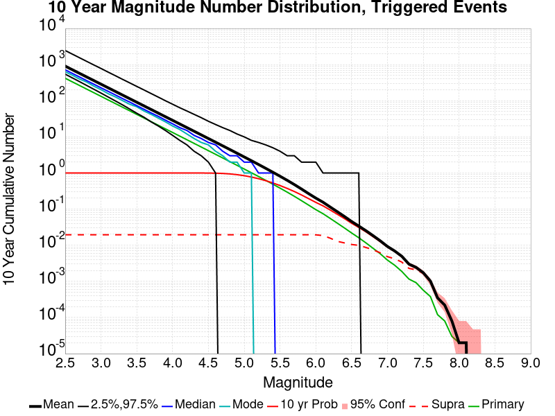
| Mag | Mean | 2.5 %ile | 97.5 %ile | Median | Mode | 10 yr Probability | 10 yr Supra-Seis Prob | Primary Aftershocks Mean |
|---|---|---|---|---|---|---|---|---|
| M≥2.5 | 909.291 | 544.000 | 2459.000 | 718.000 | 635.000 | 1.000 (100.00%) | 0.020 (1.96%) | 419.137 |
| M≥2.6 | 722.238 | 429.000 | 1951.000 | 571.000 | 525.000 | 1.000 (100.00%) | 0.020 (1.96%) | 332.907 |
| M≥2.7 | 573.635 | 338.000 | 1548.000 | 454.000 | 385.000 | 1.000 (100.00%) | 0.020 (1.96%) | 264.421 |
| M≥2.8 | 455.628 | 265.000 | 1230.000 | 361.000 | 329.000 | 1.000 (100.00%) | 0.020 (1.96%) | 210.027 |
| M≥2.9 | 361.887 | 208.000 | 979.000 | 287.000 | 246.000 | 1.000 (100.00%) | 0.020 (1.96%) | 166.833 |
| M≥3 | 287.448 | 163.000 | 780.000 | 228.000 | 204.000 | 1.000 (100.00%) | 0.020 (1.96%) | 132.517 |
| M≥3.1 | 228.315 | 127.000 | 620.000 | 182.000 | 157.000 | 1.000 (100.00%) | 0.020 (1.96%) | 105.279 |
| M≥3.2 | 181.354 | 99.000 | 494.000 | 145.000 | 128.000 | 1.000 (100.00%) | 0.020 (1.96%) | 83.627 |
| M≥3.3 | 144.053 | 77.000 | 392.000 | 115.000 | 103.000 | 1.000 (100.00%) | 0.020 (1.96%) | 66.428 |
| M≥3.4 | 114.386 | 59.000 | 313.000 | 92.000 | 85.000 | 1.000 (100.00%) | 0.020 (1.96%) | 52.744 |
| M≥3.5 | 90.837 | 45.000 | 250.000 | 73.000 | 68.000 | 1.000 (100.00%) | 0.020 (1.96%) | 41.882 |
| M≥3.6 | 72.140 | 35.000 | 199.000 | 58.000 | 52.000 | 1.000 (100.00%) | 0.020 (1.96%) | 33.254 |
| M≥3.7 | 57.279 | 26.000 | 158.000 | 46.000 | 42.000 | 1.000 (100.00%) | 0.020 (1.96%) | 26.404 |
| M≥3.8 | 45.474 | 20.000 | 126.000 | 37.000 | 33.000 | 1.000 (100.00%) | 0.020 (1.96%) | 20.962 |
| M≥3.9 | 36.115 | 15.000 | 100.000 | 29.000 | 26.000 | 1.000 (100.00%) | 0.020 (1.96%) | 16.643 |
| M≥4 | 28.655 | 11.000 | 80.000 | 23.000 | 20.000 | 1.000 (100.00%) | 0.020 (1.96%) | 13.213 |
| M≥4.1 | 22.748 | 8.000 | 64.000 | 18.000 | 16.000 | 1.000 (100.00%) | 0.020 (1.96%) | 10.491 |
| M≥4.2 | 18.047 | 5.000 | 52.000 | 15.000 | 12.000 | 1.000 (100.00%) | 0.020 (1.96%) | 8.319 |
| M≥4.3 | 14.317 | 4.000 | 42.000 | 11.000 | 9.000 | 1.000 (99.98%) | 0.020 (1.96%) | 6.600 |
| M≥4.4 | 11.353 | 3.000 | 34.000 | 9.000 | 7.000 | 0.999 (99.90%) | 0.020 (1.96%) | 5.232 |
| M≥4.5 | 8.997 | 2.000 | 27.000 | 7.000 | 6.000 | 0.996 (99.57%) | 0.020 (1.96%) | 4.149 |
| M≥4.6 | 7.127 | 1.000 | 22.000 | 6.000 | 5.000 | 0.988 (98.81%) | 0.020 (1.96%) | 3.289 |
| M≥4.7 | 5.643 | 0.000 | 18.000 | 4.000 | 3.000 | 0.971 (97.11%) | 0.020 (1.96%) | 2.606 |
| M≥4.8 | 4.465 | 0.000 | 15.000 | 3.000 | 2.000 | 0.942 (94.23%) | 0.020 (1.96%) | 2.061 |
| M≥4.9 | 3.526 | 0.000 | 12.000 | 3.000 | 2.000 | 0.899 (89.91%) | 0.020 (1.96%) | 1.628 |
| M≥5 | 2.782 | 0.000 | 10.000 | 2.000 | 1.000 | 0.842 (84.21%) | 0.020 (1.96%) | 1.287 |
| M≥5.1 | 2.193 | 0.000 | 9.000 | 2.000 | 1.000 | 0.773 (77.33%) | 0.020 (1.96%) | 1.016 |
| M≥5.2 | 1.721 | 0.000 | 7.000 | 1.000 | 0.000 | 0.695 (69.52%) | 0.020 (1.96%) | 0.799 |
| M≥5.3 | 1.347 | 0.000 | 6.000 | 1.000 | 0.000 | 0.613 (61.27%) | 0.020 (1.96%) | 0.626 |
| M≥5.4 | 1.050 | 0.000 | 5.000 | 1.000 | 0.000 | 0.529 (52.92%) | 0.020 (1.96%) | 0.489 |
| M≥5.5 | 0.815 | 0.000 | 4.000 | 0.000 | 0.000 | 0.450 (44.99%) | 0.020 (1.96%) | 0.381 |
| M≥5.6 | 0.628 | 0.000 | 3.000 | 0.000 | 0.000 | 0.375 (37.45%) | 0.020 (1.96%) | 0.295 |
| M≥5.7 | 0.479 | 0.000 | 3.000 | 0.000 | 0.000 | 0.307 (30.73%) | 0.020 (1.96%) | 0.226 |
| M≥5.8 | 0.360 | 0.000 | 2.000 | 0.000 | 0.000 | 0.247 (24.66%) | 0.020 (1.96%) | 0.171 |
| M≥5.9 | 0.268 | 0.000 | 2.000 | 0.000 | 0.000 | 0.195 (19.48%) | 0.020 (1.96%) | 0.129 |
| M≥6 | 0.202 | 0.000 | 2.000 | 0.000 | 0.000 | 0.154 (15.36%) | 0.020 (1.95%) | 0.097 |
| M≥6.1 | 0.155 | 0.000 | 1.000 | 0.000 | 0.000 | 0.123 (12.31%) | 0.019 (1.87%) | 0.075 |
| M≥6.2 | 0.115 | 0.000 | 1.000 | 0.000 | 0.000 | 0.095 (9.49%) | 0.016 (1.58%) | 0.056 |
| M≥6.3 | 0.085 | 0.000 | 1.000 | 0.000 | 0.000 | 0.073 (7.26%) | 0.013 (1.29%) | 0.041 |
| M≥6.4 | 0.063 | 0.000 | 1.000 | 0.000 | 0.000 | 0.055 (5.48%) | 0.012 (1.16%) | 0.030 |
| M≥6.5 | 0.045 | 0.000 | 1.000 | 0.000 | 0.000 | 0.041 (4.07%) | 0.011 (1.05%) | 0.022 |
| M≥6.6 | 0.034 | 0.000 | 1.000 | 0.000 | 0.000 | 0.031 (3.13%) | 9.97E-3 (1.00%) | 0.016 |
| M≥6.7 | 0.025 | 0.000 | 0.000 | 0.000 | 0.000 | 0.023 (2.35%) | 8.73E-3 (0.87%) | 0.012 |
| M≥6.8 | 0.018 | 0.000 | 0.000 | 0.000 | 0.000 | 0.017 (1.73%) | 7.47E-3 (0.75%) | 8.34E-3 |
| M≥6.9 | 0.013 | 0.000 | 0.000 | 0.000 | 0.000 | 0.013 (1.27%) | 6.20E-3 (0.62%) | 5.89E-3 |
| M≥7 | 9.30E-3 | 0.000 | 0.000 | 0.000 | 0.000 | 8.98E-3 (0.90%) | 4.88E-3 (0.49%) | 3.94E-3 |
| M≥7.1 | 6.95E-3 | 0.000 | 0.000 | 0.000 | 0.000 | 6.75E-3 (0.67%) | 4.25E-3 (0.43%) | 2.86E-3 |
| M≥7.2 | 4.95E-3 | 0.000 | 0.000 | 0.000 | 0.000 | 4.79E-3 (0.48%) | 3.45E-3 (0.34%) | 1.91E-3 |
| M≥7.3 | 3.06E-3 | 0.000 | 0.000 | 0.000 | 0.000 | 2.99E-3 (0.30%) | 2.34E-3 (0.23%) | 1.18E-3 |
| M≥7.4 | 2.48E-3 | 0.000 | 0.000 | 0.000 | 0.000 | 2.44E-3 (0.24%) | 2.14E-3 (0.21%) | 9.54E-4 |
| M≥7.5 | 1.77E-3 | 0.000 | 0.000 | 0.000 | 0.000 | 1.75E-3 (0.17%) | 1.70E-3 (0.17%) | 6.07E-4 |
| M≥7.6 | 1.04E-3 | 0.000 | 0.000 | 0.000 | 0.000 | 1.02E-3 (0.10%) | 9.98E-4 (0.10%) | 4.12E-4 |
| M≥7.7 | 3.69E-4 | 0.000 | 0.000 | 0.000 | 0.000 | 3.69E-4 (0.04%) | 3.58E-4 (0.04%) | 1.30E-4 |
| M≥7.8 | 2.28E-4 | 0.000 | 0.000 | 0.000 | 0.000 | 2.28E-4 (0.02%) | 2.17E-4 (0.02%) | 8.68E-5 |
| M≥7.9 | 7.59E-5 | 0.000 | 0.000 | 0.000 | 0.000 | 7.59E-5 (0.01%) | 7.59E-5 (0.01%) | 3.25E-5 |
| M≥8 | 2.17E-5 | 0.000 | 0.000 | 0.000 | 0.000 | 2.17E-5 (0.00%) | 2.17E-5 (0.00%) | 2.17E-5 |
| M≥8.1 | 2.17E-5 | 0.000 | 0.000 | 0.000 | 0.000 | 2.17E-5 (0.00%) | 2.17E-5 (0.00%) | 2.17E-5 |
| M≥8.2 | 0.000 | 0.000 | 0.000 | 0.000 | 0.000 | 0.000 (0.00%) | 0.000 (0.00%) | 0.000 |
| M≥8.3 | 0.000 | 0.000 | 0.000 | 0.000 | 0.000 | 0.000 (0.00%) | 0.000 (0.00%) | 0.000 |
| M≥8.4 | 0.000 | 0.000 | 0.000 | 0.000 | 0.000 | 0.000 (0.00%) | 0.000 (0.00%) | 0.000 |
| M≥8.5 | 0.000 | 0.000 | 0.000 | 0.000 | 0.000 | 0.000 (0.00%) | 0.000 (0.00%) | 0.000 |
| M≥8.6 | 0.000 | 0.000 | 0.000 | 0.000 | 0.000 | 0.000 (0.00%) | 0.000 (0.00%) | 0.000 |
| M≥8.7 | 0.000 | 0.000 | 0.000 | 0.000 | 0.000 | 0.000 (0.00%) | 0.000 (0.00%) | 0.000 |
| M≥8.8 | 0.000 | 0.000 | 0.000 | 0.000 | 0.000 | 0.000 (0.00%) | 0.000 (0.00%) | 0.000 |
| M≥8.9 | 0.000 | 0.000 | 0.000 | 0.000 | 0.000 | 0.000 (0.00%) | 0.000 (0.00%) | 0.000 |
| M≥9 | 0.000 | 0.000 | 0.000 | 0.000 | 0.000 | 0.000 (0.00%) | 0.000 (0.00%) | 0.000 |
Legend
| Mag | Mean | 2.5 %ile | 97.5 %ile | Median | Mode | 1 yr Probability | 1 yr Supra-Seis Prob | Primary Aftershocks Mean |
|---|---|---|---|---|---|---|---|---|
| M≥2.5 | 706.854 | 455.000 | 1723.000 | 582.000 | 524.000 | 1.000 (100.00%) | 0.015 (1.47%) | 371.066 |
| M≥2.6 | 561.440 | 357.000 | 1371.000 | 463.000 | 412.000 | 1.000 (100.00%) | 0.015 (1.47%) | 294.729 |
| M≥2.7 | 445.913 | 281.000 | 1088.000 | 368.000 | 331.000 | 1.000 (100.00%) | 0.015 (1.47%) | 234.094 |
| M≥2.8 | 354.160 | 220.000 | 865.000 | 293.000 | 275.000 | 1.000 (100.00%) | 0.015 (1.47%) | 185.938 |
| M≥2.9 | 281.285 | 172.000 | 689.000 | 233.000 | 215.000 | 1.000 (100.00%) | 0.015 (1.47%) | 147.697 |
| M≥3 | 223.426 | 135.000 | 547.000 | 185.000 | 167.000 | 1.000 (100.00%) | 0.015 (1.47%) | 117.305 |
| M≥3.1 | 177.474 | 105.000 | 435.000 | 147.000 | 133.000 | 1.000 (100.00%) | 0.015 (1.47%) | 93.196 |
| M≥3.2 | 140.975 | 81.000 | 347.000 | 117.000 | 107.000 | 1.000 (100.00%) | 0.015 (1.47%) | 74.031 |
| M≥3.3 | 111.982 | 63.000 | 276.000 | 93.000 | 81.000 | 1.000 (100.00%) | 0.015 (1.47%) | 58.801 |
| M≥3.4 | 88.904 | 48.000 | 220.000 | 74.000 | 68.000 | 1.000 (100.00%) | 0.015 (1.47%) | 46.687 |
| M≥3.5 | 70.591 | 37.000 | 176.000 | 59.000 | 52.000 | 1.000 (100.00%) | 0.015 (1.47%) | 37.066 |
| M≥3.6 | 56.060 | 28.000 | 140.000 | 47.000 | 43.000 | 1.000 (100.00%) | 0.015 (1.47%) | 29.432 |
| M≥3.7 | 44.513 | 21.000 | 112.000 | 37.000 | 35.000 | 1.000 (100.00%) | 0.015 (1.47%) | 23.367 |
| M≥3.8 | 35.340 | 16.000 | 89.000 | 30.000 | 28.000 | 1.000 (100.00%) | 0.015 (1.47%) | 18.553 |
| M≥3.9 | 28.073 | 12.000 | 72.000 | 24.000 | 21.000 | 1.000 (100.00%) | 0.015 (1.47%) | 14.731 |
| M≥4 | 22.278 | 8.000 | 58.000 | 19.000 | 17.000 | 1.000 (100.00%) | 0.015 (1.47%) | 11.697 |
| M≥4.1 | 17.689 | 6.000 | 46.000 | 15.000 | 13.000 | 1.000 (100.00%) | 0.015 (1.47%) | 9.288 |
| M≥4.2 | 14.035 | 4.000 | 38.000 | 12.000 | 10.000 | 1.000 (99.98%) | 0.015 (1.47%) | 7.364 |
| M≥4.3 | 11.134 | 3.000 | 30.000 | 9.000 | 8.000 | 0.999 (99.93%) | 0.015 (1.47%) | 5.842 |
| M≥4.4 | 8.828 | 2.000 | 25.000 | 7.000 | 6.000 | 0.997 (99.71%) | 0.015 (1.47%) | 4.631 |
| M≥4.5 | 6.997 | 1.000 | 20.000 | 6.000 | 4.000 | 0.990 (99.04%) | 0.015 (1.47%) | 3.672 |
| M≥4.6 | 5.546 | 1.000 | 17.000 | 4.000 | 3.000 | 0.977 (97.67%) | 0.015 (1.47%) | 2.912 |
| M≥4.7 | 4.389 | 0.000 | 14.000 | 3.000 | 3.000 | 0.951 (95.08%) | 0.015 (1.47%) | 2.307 |
| M≥4.8 | 3.475 | 0.000 | 11.000 | 3.000 | 2.000 | 0.911 (91.07%) | 0.015 (1.47%) | 1.825 |
| M≥4.9 | 2.744 | 0.000 | 9.000 | 2.000 | 1.000 | 0.856 (85.59%) | 0.015 (1.47%) | 1.441 |
| M≥5 | 2.166 | 0.000 | 8.000 | 2.000 | 1.000 | 0.789 (78.94%) | 0.015 (1.47%) | 1.140 |
| M≥5.1 | 1.708 | 0.000 | 7.000 | 1.000 | 1.000 | 0.713 (71.32%) | 0.015 (1.47%) | 0.900 |
| M≥5.2 | 1.341 | 0.000 | 6.000 | 1.000 | 0.000 | 0.631 (63.11%) | 0.015 (1.47%) | 0.708 |
| M≥5.3 | 1.050 | 0.000 | 5.000 | 1.000 | 0.000 | 0.548 (54.80%) | 0.015 (1.47%) | 0.554 |
| M≥5.4 | 0.819 | 0.000 | 4.000 | 0.000 | 0.000 | 0.467 (46.65%) | 0.015 (1.47%) | 0.433 |
| M≥5.5 | 0.636 | 0.000 | 3.000 | 0.000 | 0.000 | 0.391 (39.14%) | 0.015 (1.47%) | 0.338 |
| M≥5.6 | 0.491 | 0.000 | 3.000 | 0.000 | 0.000 | 0.322 (32.20%) | 0.015 (1.47%) | 0.261 |
| M≥5.7 | 0.374 | 0.000 | 2.000 | 0.000 | 0.000 | 0.261 (26.13%) | 0.015 (1.47%) | 0.200 |
| M≥5.8 | 0.282 | 0.000 | 2.000 | 0.000 | 0.000 | 0.207 (20.75%) | 0.015 (1.47%) | 0.151 |
| M≥5.9 | 0.210 | 0.000 | 2.000 | 0.000 | 0.000 | 0.162 (16.22%) | 0.015 (1.47%) | 0.114 |
| M≥6 | 0.158 | 0.000 | 1.000 | 0.000 | 0.000 | 0.127 (12.67%) | 0.015 (1.47%) | 0.085 |
| M≥6.1 | 0.122 | 0.000 | 1.000 | 0.000 | 0.000 | 0.101 (10.09%) | 0.014 (1.40%) | 0.066 |
| M≥6.2 | 0.090 | 0.000 | 1.000 | 0.000 | 0.000 | 0.077 (7.73%) | 0.012 (1.19%) | 0.049 |
| M≥6.3 | 0.067 | 0.000 | 1.000 | 0.000 | 0.000 | 0.059 (5.87%) | 9.61E-3 (0.96%) | 0.036 |
| M≥6.4 | 0.049 | 0.000 | 1.000 | 0.000 | 0.000 | 0.044 (4.43%) | 8.75E-3 (0.88%) | 0.027 |
| M≥6.5 | 0.036 | 0.000 | 1.000 | 0.000 | 0.000 | 0.033 (3.30%) | 8.04E-3 (0.80%) | 0.020 |
| M≥6.6 | 0.027 | 0.000 | 1.000 | 0.000 | 0.000 | 0.025 (2.51%) | 7.59E-3 (0.76%) | 0.014 |
| M≥6.7 | 0.020 | 0.000 | 0.000 | 0.000 | 0.000 | 0.019 (1.88%) | 6.67E-3 (0.67%) | 0.010 |
| M≥6.8 | 0.015 | 0.000 | 0.000 | 0.000 | 0.000 | 0.014 (1.38%) | 5.70E-3 (0.57%) | 7.35E-3 |
| M≥6.9 | 0.010 | 0.000 | 0.000 | 0.000 | 0.000 | 0.010 (1.01%) | 4.75E-3 (0.48%) | 5.22E-3 |
| M≥7 | 7.21E-3 | 0.000 | 0.000 | 0.000 | 0.000 | 7.03E-3 (0.70%) | 3.72E-3 (0.37%) | 3.46E-3 |
| M≥7.1 | 5.34E-3 | 0.000 | 0.000 | 0.000 | 0.000 | 5.20E-3 (0.52%) | 3.17E-3 (0.32%) | 2.46E-3 |
| M≥7.2 | 3.70E-3 | 0.000 | 0.000 | 0.000 | 0.000 | 3.60E-3 (0.36%) | 2.49E-3 (0.25%) | 1.65E-3 |
| M≥7.3 | 2.26E-3 | 0.000 | 0.000 | 0.000 | 0.000 | 2.20E-3 (0.22%) | 1.66E-3 (0.17%) | 1.04E-3 |
| M≥7.4 | 1.82E-3 | 0.000 | 0.000 | 0.000 | 0.000 | 1.78E-3 (0.18%) | 1.52E-3 (0.15%) | 8.46E-4 |
| M≥7.5 | 1.21E-3 | 0.000 | 0.000 | 0.000 | 0.000 | 1.19E-3 (0.12%) | 1.16E-3 (0.12%) | 5.21E-4 |
| M≥7.6 | 7.38E-4 | 0.000 | 0.000 | 0.000 | 0.000 | 7.16E-4 (0.07%) | 7.05E-4 (0.07%) | 3.47E-4 |
| M≥7.7 | 2.82E-4 | 0.000 | 0.000 | 0.000 | 0.000 | 2.82E-4 (0.03%) | 2.71E-4 (0.03%) | 1.08E-4 |
| M≥7.8 | 1.52E-4 | 0.000 | 0.000 | 0.000 | 0.000 | 1.52E-4 (0.02%) | 1.41E-4 (0.01%) | 6.51E-5 |
| M≥7.9 | 5.42E-5 | 0.000 | 0.000 | 0.000 | 0.000 | 5.42E-5 (0.01%) | 5.42E-5 (0.01%) | 2.17E-5 |
| M≥8 | 1.08E-5 | 0.000 | 0.000 | 0.000 | 0.000 | 1.08E-5 (0.00%) | 1.08E-5 (0.00%) | 1.08E-5 |
| M≥8.1 | 1.08E-5 | 0.000 | 0.000 | 0.000 | 0.000 | 1.08E-5 (0.00%) | 1.08E-5 (0.00%) | 1.08E-5 |
| M≥8.2 | 0.000 | 0.000 | 0.000 | 0.000 | 0.000 | 0.000 (0.00%) | 0.000 (0.00%) | 0.000 |
| M≥8.3 | 0.000 | 0.000 | 0.000 | 0.000 | 0.000 | 0.000 (0.00%) | 0.000 (0.00%) | 0.000 |
| M≥8.4 | 0.000 | 0.000 | 0.000 | 0.000 | 0.000 | 0.000 (0.00%) | 0.000 (0.00%) | 0.000 |
| M≥8.5 | 0.000 | 0.000 | 0.000 | 0.000 | 0.000 | 0.000 (0.00%) | 0.000 (0.00%) | 0.000 |
| M≥8.6 | 0.000 | 0.000 | 0.000 | 0.000 | 0.000 | 0.000 (0.00%) | 0.000 (0.00%) | 0.000 |
| M≥8.7 | 0.000 | 0.000 | 0.000 | 0.000 | 0.000 | 0.000 (0.00%) | 0.000 (0.00%) | 0.000 |
| M≥8.8 | 0.000 | 0.000 | 0.000 | 0.000 | 0.000 | 0.000 (0.00%) | 0.000 (0.00%) | 0.000 |
| M≥8.9 | 0.000 | 0.000 | 0.000 | 0.000 | 0.000 | 0.000 (0.00%) | 0.000 (0.00%) | 0.000 |
| M≥9 | 0.000 | 0.000 | 0.000 | 0.000 | 0.000 | 0.000 (0.00%) | 0.000 (0.00%) | 0.000 |
Legend

| Mag | Mean | 2.5 %ile | 97.5 %ile | Median | Mode | 1 mo Probability | 1 mo Supra-Seis Prob | Primary Aftershocks Mean |
|---|---|---|---|---|---|---|---|---|
| M≥2.5 | 509.029 | 353.000 | 1087.000 | 438.000 | 409.000 | 1.000 (100.00%) | 9.95E-3 (0.99%) | 309.317 |
| M≥2.6 | 404.318 | 277.000 | 865.000 | 349.000 | 329.000 | 1.000 (100.00%) | 9.95E-3 (0.99%) | 245.693 |
| M≥2.7 | 321.110 | 217.000 | 685.000 | 278.000 | 260.000 | 1.000 (100.00%) | 9.95E-3 (0.99%) | 195.136 |
| M≥2.8 | 255.029 | 170.000 | 546.000 | 221.000 | 199.000 | 1.000 (100.00%) | 9.95E-3 (0.99%) | 154.987 |
| M≥2.9 | 202.542 | 133.000 | 435.000 | 176.000 | 164.000 | 1.000 (100.00%) | 9.95E-3 (0.99%) | 123.108 |
| M≥3 | 160.872 | 103.000 | 346.000 | 140.000 | 131.000 | 1.000 (100.00%) | 9.95E-3 (0.99%) | 97.765 |
| M≥3.1 | 127.790 | 80.000 | 275.000 | 111.000 | 101.000 | 1.000 (100.00%) | 9.95E-3 (0.99%) | 77.674 |
| M≥3.2 | 101.507 | 62.000 | 220.000 | 88.000 | 82.000 | 1.000 (100.00%) | 9.95E-3 (0.99%) | 61.700 |
| M≥3.3 | 80.634 | 47.000 | 175.000 | 70.000 | 64.000 | 1.000 (100.00%) | 9.95E-3 (0.99%) | 49.009 |
| M≥3.4 | 64.011 | 36.000 | 139.000 | 56.000 | 51.000 | 1.000 (100.00%) | 9.95E-3 (0.99%) | 38.909 |
| M≥3.5 | 50.818 | 27.000 | 111.000 | 44.000 | 41.000 | 1.000 (100.00%) | 9.95E-3 (0.99%) | 30.891 |
| M≥3.6 | 40.368 | 21.000 | 89.000 | 35.000 | 32.000 | 1.000 (100.00%) | 9.95E-3 (0.99%) | 24.532 |
| M≥3.7 | 32.052 | 15.000 | 72.000 | 28.000 | 27.000 | 1.000 (100.00%) | 9.95E-3 (0.99%) | 19.473 |
| M≥3.8 | 25.443 | 11.000 | 58.000 | 22.000 | 21.000 | 1.000 (100.00%) | 9.95E-3 (0.99%) | 15.461 |
| M≥3.9 | 20.208 | 8.000 | 47.000 | 18.000 | 17.000 | 1.000 (100.00%) | 9.95E-3 (0.99%) | 12.276 |
| M≥4 | 16.036 | 6.000 | 37.000 | 14.000 | 12.000 | 1.000 (100.00%) | 9.95E-3 (0.99%) | 9.746 |
| M≥4.1 | 12.726 | 4.000 | 30.000 | 11.000 | 10.000 | 1.000 (99.99%) | 9.95E-3 (0.99%) | 7.736 |
| M≥4.2 | 10.096 | 3.000 | 25.000 | 9.000 | 8.000 | 0.999 (99.93%) | 9.95E-3 (0.99%) | 6.136 |
| M≥4.3 | 8.008 | 2.000 | 20.000 | 7.000 | 6.000 | 0.997 (99.69%) | 9.95E-3 (0.99%) | 4.867 |
| M≥4.4 | 6.351 | 1.000 | 17.000 | 5.000 | 4.000 | 0.990 (99.01%) | 9.95E-3 (0.99%) | 3.859 |
| M≥4.5 | 5.037 | 0.000 | 14.000 | 4.000 | 3.000 | 0.975 (97.49%) | 9.95E-3 (0.99%) | 3.060 |
| M≥4.6 | 3.993 | 0.000 | 11.000 | 3.000 | 3.000 | 0.948 (94.85%) | 9.95E-3 (0.99%) | 2.426 |
| M≥4.7 | 3.160 | 0.000 | 10.000 | 3.000 | 2.000 | 0.908 (90.77%) | 9.95E-3 (0.99%) | 1.923 |
| M≥4.8 | 2.500 | 0.000 | 8.000 | 2.000 | 1.000 | 0.851 (85.07%) | 9.95E-3 (0.99%) | 1.520 |
| M≥4.9 | 1.976 | 0.000 | 7.000 | 2.000 | 1.000 | 0.782 (78.15%) | 9.95E-3 (0.99%) | 1.200 |
| M≥5 | 1.561 | 0.000 | 6.000 | 1.000 | 1.000 | 0.704 (70.45%) | 9.95E-3 (0.99%) | 0.949 |
| M≥5.1 | 1.231 | 0.000 | 5.000 | 1.000 | 0.000 | 0.623 (62.27%) | 9.95E-3 (0.99%) | 0.750 |
| M≥5.2 | 0.967 | 0.000 | 4.000 | 1.000 | 0.000 | 0.540 (53.98%) | 9.95E-3 (0.99%) | 0.590 |
| M≥5.3 | 0.756 | 0.000 | 4.000 | 0.000 | 0.000 | 0.459 (45.93%) | 9.95E-3 (0.99%) | 0.461 |
| M≥5.4 | 0.590 | 0.000 | 3.000 | 0.000 | 0.000 | 0.385 (38.49%) | 9.95E-3 (0.99%) | 0.361 |
| M≥5.5 | 0.458 | 0.000 | 3.000 | 0.000 | 0.000 | 0.318 (31.78%) | 9.95E-3 (0.99%) | 0.281 |
| M≥5.6 | 0.354 | 0.000 | 2.000 | 0.000 | 0.000 | 0.258 (25.79%) | 9.95E-3 (0.99%) | 0.218 |
| M≥5.7 | 0.270 | 0.000 | 2.000 | 0.000 | 0.000 | 0.206 (20.64%) | 9.95E-3 (0.99%) | 0.167 |
| M≥5.8 | 0.204 | 0.000 | 2.000 | 0.000 | 0.000 | 0.162 (16.18%) | 9.95E-3 (0.99%) | 0.126 |
| M≥5.9 | 0.152 | 0.000 | 1.000 | 0.000 | 0.000 | 0.125 (12.51%) | 9.95E-3 (0.99%) | 0.095 |
| M≥6 | 0.114 | 0.000 | 1.000 | 0.000 | 0.000 | 0.097 (9.68%) | 9.93E-3 (0.99%) | 0.071 |
| M≥6.1 | 0.088 | 0.000 | 1.000 | 0.000 | 0.000 | 0.077 (7.68%) | 9.50E-3 (0.95%) | 0.055 |
| M≥6.2 | 0.065 | 0.000 | 1.000 | 0.000 | 0.000 | 0.059 (5.85%) | 8.12E-3 (0.81%) | 0.041 |
| M≥6.3 | 0.049 | 0.000 | 1.000 | 0.000 | 0.000 | 0.044 (4.42%) | 6.52E-3 (0.65%) | 0.030 |
| M≥6.4 | 0.036 | 0.000 | 1.000 | 0.000 | 0.000 | 0.033 (3.33%) | 5.94E-3 (0.59%) | 0.022 |
| M≥6.5 | 0.026 | 0.000 | 0.000 | 0.000 | 0.000 | 0.025 (2.46%) | 5.48E-3 (0.55%) | 0.016 |
| M≥6.6 | 0.019 | 0.000 | 0.000 | 0.000 | 0.000 | 0.019 (1.85%) | 5.20E-3 (0.52%) | 0.012 |
| M≥6.7 | 0.014 | 0.000 | 0.000 | 0.000 | 0.000 | 0.014 (1.37%) | 4.50E-3 (0.45%) | 8.67E-3 |
| M≥6.8 | 0.010 | 0.000 | 0.000 | 0.000 | 0.000 | 9.86E-3 (0.99%) | 3.77E-3 (0.38%) | 6.14E-3 |
| M≥6.9 | 7.33E-3 | 0.000 | 0.000 | 0.000 | 0.000 | 7.16E-3 (0.72%) | 3.16E-3 (0.32%) | 4.32E-3 |
| M≥7 | 5.03E-3 | 0.000 | 0.000 | 0.000 | 0.000 | 4.92E-3 (0.49%) | 2.48E-3 (0.25%) | 2.83E-3 |
| M≥7.1 | 3.70E-3 | 0.000 | 0.000 | 0.000 | 0.000 | 3.62E-3 (0.36%) | 2.10E-3 (0.21%) | 2.05E-3 |
| M≥7.2 | 2.58E-3 | 0.000 | 0.000 | 0.000 | 0.000 | 2.54E-3 (0.25%) | 1.69E-3 (0.17%) | 1.41E-3 |
| M≥7.3 | 1.56E-3 | 0.000 | 0.000 | 0.000 | 0.000 | 1.54E-3 (0.15%) | 1.12E-3 (0.11%) | 8.89E-4 |
| M≥7.4 | 1.24E-3 | 0.000 | 0.000 | 0.000 | 0.000 | 1.21E-3 (0.12%) | 1.03E-3 (0.10%) | 7.16E-4 |
| M≥7.5 | 8.79E-4 | 0.000 | 0.000 | 0.000 | 0.000 | 8.68E-4 (0.09%) | 8.46E-4 (0.08%) | 4.56E-4 |
| M≥7.6 | 6.07E-4 | 0.000 | 0.000 | 0.000 | 0.000 | 5.97E-4 (0.06%) | 5.86E-4 (0.06%) | 3.25E-4 |
| M≥7.7 | 2.06E-4 | 0.000 | 0.000 | 0.000 | 0.000 | 2.06E-4 (0.02%) | 1.95E-4 (0.02%) | 9.76E-5 |
| M≥7.8 | 8.68E-5 | 0.000 | 0.000 | 0.000 | 0.000 | 8.68E-5 (0.01%) | 7.59E-5 (0.01%) | 5.42E-5 |
| M≥7.9 | 2.17E-5 | 0.000 | 0.000 | 0.000 | 0.000 | 2.17E-5 (0.00%) | 2.17E-5 (0.00%) | 2.17E-5 |
| M≥8 | 1.08E-5 | 0.000 | 0.000 | 0.000 | 0.000 | 1.08E-5 (0.00%) | 1.08E-5 (0.00%) | 1.08E-5 |
| M≥8.1 | 1.08E-5 | 0.000 | 0.000 | 0.000 | 0.000 | 1.08E-5 (0.00%) | 1.08E-5 (0.00%) | 1.08E-5 |
| M≥8.2 | 0.000 | 0.000 | 0.000 | 0.000 | 0.000 | 0.000 (0.00%) | 0.000 (0.00%) | 0.000 |
| M≥8.3 | 0.000 | 0.000 | 0.000 | 0.000 | 0.000 | 0.000 (0.00%) | 0.000 (0.00%) | 0.000 |
| M≥8.4 | 0.000 | 0.000 | 0.000 | 0.000 | 0.000 | 0.000 (0.00%) | 0.000 (0.00%) | 0.000 |
| M≥8.5 | 0.000 | 0.000 | 0.000 | 0.000 | 0.000 | 0.000 (0.00%) | 0.000 (0.00%) | 0.000 |
| M≥8.6 | 0.000 | 0.000 | 0.000 | 0.000 | 0.000 | 0.000 (0.00%) | 0.000 (0.00%) | 0.000 |
| M≥8.7 | 0.000 | 0.000 | 0.000 | 0.000 | 0.000 | 0.000 (0.00%) | 0.000 (0.00%) | 0.000 |
| M≥8.8 | 0.000 | 0.000 | 0.000 | 0.000 | 0.000 | 0.000 (0.00%) | 0.000 (0.00%) | 0.000 |
| M≥8.9 | 0.000 | 0.000 | 0.000 | 0.000 | 0.000 | 0.000 (0.00%) | 0.000 (0.00%) | 0.000 |
| M≥9 | 0.000 | 0.000 | 0.000 | 0.000 | 0.000 | 0.000 (0.00%) | 0.000 (0.00%) | 0.000 |
Legend

| Mag | Mean | 2.5 %ile | 97.5 %ile | Median | Mode | 1 wk Probability | 1 wk Supra-Seis Prob | Primary Aftershocks Mean |
|---|---|---|---|---|---|---|---|---|
| M≥2.5 | 404.488 | 291.000 | 796.000 | 358.000 | 338.000 | 1.000 (100.00%) | 7.82E-3 (0.78%) | 268.118 |
| M≥2.6 | 321.279 | 228.000 | 633.000 | 284.000 | 275.000 | 1.000 (100.00%) | 7.82E-3 (0.78%) | 212.970 |
| M≥2.7 | 255.155 | 178.000 | 504.000 | 226.000 | 219.000 | 1.000 (100.00%) | 7.82E-3 (0.78%) | 169.137 |
| M≥2.8 | 202.654 | 139.000 | 401.000 | 180.000 | 166.000 | 1.000 (100.00%) | 7.82E-3 (0.78%) | 134.339 |
| M≥2.9 | 160.961 | 108.000 | 318.000 | 143.000 | 137.000 | 1.000 (100.00%) | 7.82E-3 (0.78%) | 106.718 |
| M≥3 | 127.835 | 84.000 | 253.000 | 114.000 | 109.000 | 1.000 (100.00%) | 7.82E-3 (0.78%) | 84.742 |
| M≥3.1 | 101.535 | 65.000 | 202.000 | 91.000 | 85.000 | 1.000 (100.00%) | 7.82E-3 (0.78%) | 67.314 |
| M≥3.2 | 80.655 | 50.000 | 161.000 | 72.000 | 67.000 | 1.000 (100.00%) | 7.82E-3 (0.78%) | 53.469 |
| M≥3.3 | 64.070 | 38.000 | 128.000 | 57.000 | 53.000 | 1.000 (100.00%) | 7.82E-3 (0.78%) | 42.472 |
| M≥3.4 | 50.856 | 29.000 | 103.000 | 46.000 | 44.000 | 1.000 (100.00%) | 7.82E-3 (0.78%) | 33.718 |
| M≥3.5 | 40.371 | 22.000 | 82.000 | 36.000 | 34.000 | 1.000 (100.00%) | 7.82E-3 (0.78%) | 26.769 |
| M≥3.6 | 32.069 | 16.000 | 66.000 | 29.000 | 27.000 | 1.000 (100.00%) | 7.82E-3 (0.78%) | 21.259 |
| M≥3.7 | 25.465 | 12.000 | 53.000 | 23.000 | 21.000 | 1.000 (100.00%) | 7.82E-3 (0.78%) | 16.876 |
| M≥3.8 | 20.216 | 9.000 | 43.000 | 18.000 | 16.000 | 1.000 (100.00%) | 7.82E-3 (0.78%) | 13.398 |
| M≥3.9 | 16.060 | 6.000 | 35.000 | 14.000 | 13.000 | 1.000 (100.00%) | 7.82E-3 (0.78%) | 10.641 |
| M≥4 | 12.742 | 4.000 | 28.000 | 11.000 | 10.000 | 1.000 (99.99%) | 7.82E-3 (0.78%) | 8.445 |
| M≥4.1 | 10.111 | 3.000 | 23.000 | 9.000 | 8.000 | 0.999 (99.95%) | 7.82E-3 (0.78%) | 6.705 |
| M≥4.2 | 8.020 | 2.000 | 19.000 | 7.000 | 6.000 | 0.998 (99.77%) | 7.82E-3 (0.78%) | 5.318 |
| M≥4.3 | 6.363 | 1.000 | 16.000 | 6.000 | 5.000 | 0.992 (99.25%) | 7.82E-3 (0.78%) | 4.219 |
| M≥4.4 | 5.047 | 1.000 | 13.000 | 4.000 | 4.000 | 0.979 (97.95%) | 7.82E-3 (0.78%) | 3.345 |
| M≥4.5 | 4.003 | 0.000 | 11.000 | 3.000 | 3.000 | 0.955 (95.50%) | 7.82E-3 (0.78%) | 2.652 |
| M≥4.6 | 3.174 | 0.000 | 9.000 | 3.000 | 2.000 | 0.917 (91.65%) | 7.82E-3 (0.78%) | 2.103 |
| M≥4.7 | 2.513 | 0.000 | 8.000 | 2.000 | 1.000 | 0.863 (86.34%) | 7.82E-3 (0.78%) | 1.667 |
| M≥4.8 | 1.988 | 0.000 | 7.000 | 2.000 | 1.000 | 0.796 (79.63%) | 7.82E-3 (0.78%) | 1.316 |
| M≥4.9 | 1.571 | 0.000 | 6.000 | 1.000 | 1.000 | 0.719 (71.86%) | 7.82E-3 (0.78%) | 1.040 |
| M≥5 | 1.242 | 0.000 | 5.000 | 1.000 | 0.000 | 0.637 (63.74%) | 7.82E-3 (0.78%) | 0.822 |
| M≥5.1 | 0.981 | 0.000 | 4.000 | 1.000 | 0.000 | 0.555 (55.53%) | 7.82E-3 (0.78%) | 0.650 |
| M≥5.2 | 0.771 | 0.000 | 3.000 | 0.000 | 0.000 | 0.475 (47.51%) | 7.82E-3 (0.78%) | 0.511 |
| M≥5.3 | 0.602 | 0.000 | 3.000 | 0.000 | 0.000 | 0.399 (39.92%) | 7.82E-3 (0.78%) | 0.399 |
| M≥5.4 | 0.470 | 0.000 | 3.000 | 0.000 | 0.000 | 0.331 (33.08%) | 7.82E-3 (0.78%) | 0.313 |
| M≥5.5 | 0.366 | 0.000 | 2.000 | 0.000 | 0.000 | 0.271 (27.07%) | 7.82E-3 (0.78%) | 0.244 |
| M≥5.6 | 0.283 | 0.000 | 2.000 | 0.000 | 0.000 | 0.218 (21.80%) | 7.82E-3 (0.78%) | 0.189 |
| M≥5.7 | 0.216 | 0.000 | 2.000 | 0.000 | 0.000 | 0.173 (17.33%) | 7.82E-3 (0.78%) | 0.145 |
| M≥5.8 | 0.163 | 0.000 | 1.000 | 0.000 | 0.000 | 0.135 (13.51%) | 7.82E-3 (0.78%) | 0.109 |
| M≥5.9 | 0.122 | 0.000 | 1.000 | 0.000 | 0.000 | 0.104 (10.45%) | 7.82E-3 (0.78%) | 0.083 |
| M≥6 | 0.092 | 0.000 | 1.000 | 0.000 | 0.000 | 0.080 (8.04%) | 7.81E-3 (0.78%) | 0.062 |
| M≥6.1 | 0.071 | 0.000 | 1.000 | 0.000 | 0.000 | 0.063 (6.35%) | 7.49E-3 (0.75%) | 0.048 |
| M≥6.2 | 0.053 | 0.000 | 1.000 | 0.000 | 0.000 | 0.048 (4.82%) | 6.40E-3 (0.64%) | 0.036 |
| M≥6.3 | 0.039 | 0.000 | 1.000 | 0.000 | 0.000 | 0.036 (3.62%) | 5.13E-3 (0.51%) | 0.026 |
| M≥6.4 | 0.029 | 0.000 | 1.000 | 0.000 | 0.000 | 0.027 (2.73%) | 4.67E-3 (0.47%) | 0.020 |
| M≥6.5 | 0.021 | 0.000 | 0.000 | 0.000 | 0.000 | 0.020 (2.02%) | 4.31E-3 (0.43%) | 0.014 |
| M≥6.6 | 0.016 | 0.000 | 0.000 | 0.000 | 0.000 | 0.015 (1.50%) | 4.12E-3 (0.41%) | 0.010 |
| M≥6.7 | 0.011 | 0.000 | 0.000 | 0.000 | 0.000 | 0.011 (1.12%) | 3.57E-3 (0.36%) | 7.66E-3 |
| M≥6.8 | 8.16E-3 | 0.000 | 0.000 | 0.000 | 0.000 | 7.98E-3 (0.80%) | 2.95E-3 (0.30%) | 5.42E-3 |
| M≥6.9 | 5.84E-3 | 0.000 | 0.000 | 0.000 | 0.000 | 5.78E-3 (0.58%) | 2.47E-3 (0.25%) | 3.79E-3 |
| M≥7 | 4.05E-3 | 0.000 | 0.000 | 0.000 | 0.000 | 4.00E-3 (0.40%) | 1.96E-3 (0.20%) | 2.47E-3 |
| M≥7.1 | 2.92E-3 | 0.000 | 0.000 | 0.000 | 0.000 | 2.89E-3 (0.29%) | 1.64E-3 (0.16%) | 1.75E-3 |
| M≥7.2 | 1.93E-3 | 0.000 | 0.000 | 0.000 | 0.000 | 1.91E-3 (0.19%) | 1.28E-3 (0.13%) | 1.16E-3 |
| M≥7.3 | 1.19E-3 | 0.000 | 0.000 | 0.000 | 0.000 | 1.18E-3 (0.12%) | 8.89E-4 (0.09%) | 7.16E-4 |
| M≥7.4 | 9.54E-4 | 0.000 | 0.000 | 0.000 | 0.000 | 9.44E-4 (0.09%) | 8.13E-4 (0.08%) | 5.86E-4 |
| M≥7.5 | 7.16E-4 | 0.000 | 0.000 | 0.000 | 0.000 | 7.05E-4 (0.07%) | 6.83E-4 (0.07%) | 3.90E-4 |
| M≥7.6 | 4.77E-4 | 0.000 | 0.000 | 0.000 | 0.000 | 4.66E-4 (0.05%) | 4.56E-4 (0.05%) | 2.60E-4 |
| M≥7.7 | 1.74E-4 | 0.000 | 0.000 | 0.000 | 0.000 | 1.74E-4 (0.02%) | 1.63E-4 (0.02%) | 8.68E-5 |
| M≥7.8 | 6.51E-5 | 0.000 | 0.000 | 0.000 | 0.000 | 6.51E-5 (0.01%) | 5.42E-5 (0.01%) | 4.34E-5 |
| M≥7.9 | 1.08E-5 | 0.000 | 0.000 | 0.000 | 0.000 | 1.08E-5 (0.00%) | 1.08E-5 (0.00%) | 1.08E-5 |
| M≥8 | 1.08E-5 | 0.000 | 0.000 | 0.000 | 0.000 | 1.08E-5 (0.00%) | 1.08E-5 (0.00%) | 1.08E-5 |
| M≥8.1 | 1.08E-5 | 0.000 | 0.000 | 0.000 | 0.000 | 1.08E-5 (0.00%) | 1.08E-5 (0.00%) | 1.08E-5 |
| M≥8.2 | 0.000 | 0.000 | 0.000 | 0.000 | 0.000 | 0.000 (0.00%) | 0.000 (0.00%) | 0.000 |
| M≥8.3 | 0.000 | 0.000 | 0.000 | 0.000 | 0.000 | 0.000 (0.00%) | 0.000 (0.00%) | 0.000 |
| M≥8.4 | 0.000 | 0.000 | 0.000 | 0.000 | 0.000 | 0.000 (0.00%) | 0.000 (0.00%) | 0.000 |
| M≥8.5 | 0.000 | 0.000 | 0.000 | 0.000 | 0.000 | 0.000 (0.00%) | 0.000 (0.00%) | 0.000 |
| M≥8.6 | 0.000 | 0.000 | 0.000 | 0.000 | 0.000 | 0.000 (0.00%) | 0.000 (0.00%) | 0.000 |
| M≥8.7 | 0.000 | 0.000 | 0.000 | 0.000 | 0.000 | 0.000 (0.00%) | 0.000 (0.00%) | 0.000 |
| M≥8.8 | 0.000 | 0.000 | 0.000 | 0.000 | 0.000 | 0.000 (0.00%) | 0.000 (0.00%) | 0.000 |
| M≥8.9 | 0.000 | 0.000 | 0.000 | 0.000 | 0.000 | 0.000 (0.00%) | 0.000 (0.00%) | 0.000 |
| M≥9 | 0.000 | 0.000 | 0.000 | 0.000 | 0.000 | 0.000 (0.00%) | 0.000 (0.00%) | 0.000 |
Legend

| Mag | Mean | 2.5 %ile | 97.5 %ile | Median | Mode | 1 d Probability | 1 d Supra-Seis Prob | Primary Aftershocks Mean |
|---|---|---|---|---|---|---|---|---|
| M≥2.5 | 275.795 | 208.000 | 472.000 | 253.000 | 245.000 | 1.000 (100.00%) | 5.16E-3 (0.52%) | 206.139 |
| M≥2.6 | 219.055 | 162.000 | 376.000 | 201.000 | 194.000 | 1.000 (100.00%) | 5.16E-3 (0.52%) | 163.743 |
| M≥2.7 | 173.978 | 127.000 | 299.000 | 160.000 | 154.000 | 1.000 (100.00%) | 5.16E-3 (0.52%) | 130.049 |
| M≥2.8 | 138.170 | 98.000 | 237.000 | 127.000 | 123.000 | 1.000 (100.00%) | 5.16E-3 (0.52%) | 103.289 |
| M≥2.9 | 109.748 | 76.000 | 190.000 | 101.000 | 98.000 | 1.000 (100.00%) | 5.16E-3 (0.52%) | 82.049 |
| M≥3 | 87.168 | 59.000 | 152.000 | 81.000 | 77.000 | 1.000 (100.00%) | 5.16E-3 (0.52%) | 65.158 |
| M≥3.1 | 69.226 | 45.000 | 121.000 | 64.000 | 63.000 | 1.000 (100.00%) | 5.16E-3 (0.52%) | 51.751 |
| M≥3.2 | 54.983 | 34.000 | 97.000 | 51.000 | 49.000 | 1.000 (100.00%) | 5.16E-3 (0.52%) | 41.099 |
| M≥3.3 | 43.681 | 26.000 | 78.000 | 40.000 | 39.000 | 1.000 (100.00%) | 5.16E-3 (0.52%) | 32.650 |
| M≥3.4 | 34.666 | 20.000 | 62.000 | 32.000 | 31.000 | 1.000 (100.00%) | 5.16E-3 (0.52%) | 25.916 |
| M≥3.5 | 27.523 | 15.000 | 50.000 | 25.000 | 24.000 | 1.000 (100.00%) | 5.16E-3 (0.52%) | 20.578 |
| M≥3.6 | 21.863 | 11.000 | 41.000 | 20.000 | 19.000 | 1.000 (100.00%) | 5.16E-3 (0.52%) | 16.337 |
| M≥3.7 | 17.358 | 8.000 | 33.000 | 16.000 | 15.000 | 1.000 (100.00%) | 5.16E-3 (0.52%) | 12.968 |
| M≥3.8 | 13.777 | 6.000 | 27.000 | 13.000 | 12.000 | 1.000 (100.00%) | 5.16E-3 (0.52%) | 10.295 |
| M≥3.9 | 10.947 | 4.000 | 22.000 | 10.000 | 9.000 | 1.000 (99.98%) | 5.16E-3 (0.52%) | 8.180 |
| M≥4 | 8.684 | 3.000 | 18.000 | 8.000 | 7.000 | 0.999 (99.91%) | 5.16E-3 (0.52%) | 6.491 |
| M≥4.1 | 6.892 | 2.000 | 15.000 | 6.000 | 6.000 | 0.996 (99.63%) | 5.16E-3 (0.52%) | 5.153 |
| M≥4.2 | 5.469 | 1.000 | 13.000 | 5.000 | 4.000 | 0.989 (98.90%) | 5.16E-3 (0.52%) | 4.088 |
| M≥4.3 | 4.338 | 0.000 | 11.000 | 4.000 | 3.000 | 0.973 (97.32%) | 5.16E-3 (0.52%) | 3.242 |
| M≥4.4 | 3.441 | 0.000 | 9.000 | 3.000 | 2.000 | 0.944 (94.41%) | 5.16E-3 (0.52%) | 2.572 |
| M≥4.5 | 2.727 | 0.000 | 8.000 | 2.000 | 2.000 | 0.899 (89.88%) | 5.16E-3 (0.52%) | 2.038 |
| M≥4.6 | 2.162 | 0.000 | 7.000 | 2.000 | 1.000 | 0.839 (83.95%) | 5.16E-3 (0.52%) | 1.616 |
| M≥4.7 | 1.711 | 0.000 | 6.000 | 1.000 | 1.000 | 0.767 (76.70%) | 5.16E-3 (0.52%) | 1.280 |
| M≥4.8 | 1.353 | 0.000 | 5.000 | 1.000 | 1.000 | 0.687 (68.70%) | 5.16E-3 (0.52%) | 1.011 |
| M≥4.9 | 1.070 | 0.000 | 4.000 | 1.000 | 0.000 | 0.603 (60.29%) | 5.16E-3 (0.52%) | 0.799 |
| M≥5 | 0.846 | 0.000 | 4.000 | 1.000 | 0.000 | 0.521 (52.09%) | 5.16E-3 (0.52%) | 0.631 |
| M≥5.1 | 0.669 | 0.000 | 3.000 | 0.000 | 0.000 | 0.443 (44.34%) | 5.16E-3 (0.52%) | 0.499 |
| M≥5.2 | 0.526 | 0.000 | 3.000 | 0.000 | 0.000 | 0.372 (37.20%) | 5.16E-3 (0.52%) | 0.393 |
| M≥5.3 | 0.412 | 0.000 | 2.000 | 0.000 | 0.000 | 0.307 (30.66%) | 5.16E-3 (0.52%) | 0.307 |
| M≥5.4 | 0.322 | 0.000 | 2.000 | 0.000 | 0.000 | 0.250 (25.01%) | 5.16E-3 (0.52%) | 0.241 |
| M≥5.5 | 0.251 | 0.000 | 2.000 | 0.000 | 0.000 | 0.202 (20.22%) | 5.16E-3 (0.52%) | 0.188 |
| M≥5.6 | 0.194 | 0.000 | 2.000 | 0.000 | 0.000 | 0.161 (16.11%) | 5.16E-3 (0.52%) | 0.145 |
| M≥5.7 | 0.148 | 0.000 | 1.000 | 0.000 | 0.000 | 0.126 (12.63%) | 5.16E-3 (0.52%) | 0.111 |
| M≥5.8 | 0.112 | 0.000 | 1.000 | 0.000 | 0.000 | 0.098 (9.78%) | 5.16E-3 (0.52%) | 0.084 |
| M≥5.9 | 0.084 | 0.000 | 1.000 | 0.000 | 0.000 | 0.075 (7.54%) | 5.16E-3 (0.52%) | 0.064 |
| M≥6 | 0.063 | 0.000 | 1.000 | 0.000 | 0.000 | 0.057 (5.72%) | 5.15E-3 (0.52%) | 0.047 |
| M≥6.1 | 0.049 | 0.000 | 1.000 | 0.000 | 0.000 | 0.045 (4.49%) | 4.99E-3 (0.50%) | 0.037 |
| M≥6.2 | 0.036 | 0.000 | 1.000 | 0.000 | 0.000 | 0.034 (3.39%) | 4.33E-3 (0.43%) | 0.027 |
| M≥6.3 | 0.027 | 0.000 | 1.000 | 0.000 | 0.000 | 0.025 (2.54%) | 3.38E-3 (0.34%) | 0.020 |
| M≥6.4 | 0.020 | 0.000 | 0.000 | 0.000 | 0.000 | 0.019 (1.90%) | 3.10E-3 (0.31%) | 0.015 |
| M≥6.5 | 0.015 | 0.000 | 0.000 | 0.000 | 0.000 | 0.014 (1.43%) | 2.90E-3 (0.29%) | 0.011 |
| M≥6.6 | 0.011 | 0.000 | 0.000 | 0.000 | 0.000 | 0.011 (1.06%) | 2.81E-3 (0.28%) | 8.12E-3 |
| M≥6.7 | 8.23E-3 | 0.000 | 0.000 | 0.000 | 0.000 | 8.08E-3 (0.81%) | 2.49E-3 (0.25%) | 6.12E-3 |
| M≥6.8 | 5.90E-3 | 0.000 | 0.000 | 0.000 | 0.000 | 5.78E-3 (0.58%) | 2.07E-3 (0.21%) | 4.36E-3 |
| M≥6.9 | 4.24E-3 | 0.000 | 0.000 | 0.000 | 0.000 | 4.20E-3 (0.42%) | 1.74E-3 (0.17%) | 3.05E-3 |
| M≥7 | 2.80E-3 | 0.000 | 0.000 | 0.000 | 0.000 | 2.77E-3 (0.28%) | 1.30E-3 (0.13%) | 1.97E-3 |
| M≥7.1 | 1.98E-3 | 0.000 | 0.000 | 0.000 | 0.000 | 1.96E-3 (0.20%) | 1.06E-3 (0.11%) | 1.38E-3 |
| M≥7.2 | 1.37E-3 | 0.000 | 0.000 | 0.000 | 0.000 | 1.34E-3 (0.13%) | 8.57E-4 (0.09%) | 9.33E-4 |
| M≥7.3 | 8.13E-4 | 0.000 | 0.000 | 0.000 | 0.000 | 8.03E-4 (0.08%) | 5.75E-4 (0.06%) | 5.31E-4 |
| M≥7.4 | 6.18E-4 | 0.000 | 0.000 | 0.000 | 0.000 | 6.07E-4 (0.06%) | 5.10E-4 (0.05%) | 4.23E-4 |
| M≥7.5 | 4.45E-4 | 0.000 | 0.000 | 0.000 | 0.000 | 4.34E-4 (0.04%) | 4.23E-4 (0.04%) | 2.60E-4 |
| M≥7.6 | 3.15E-4 | 0.000 | 0.000 | 0.000 | 0.000 | 3.04E-4 (0.03%) | 2.93E-4 (0.03%) | 1.63E-4 |
| M≥7.7 | 1.52E-4 | 0.000 | 0.000 | 0.000 | 0.000 | 1.52E-4 (0.02%) | 1.41E-4 (0.01%) | 6.51E-5 |
| M≥7.8 | 6.51E-5 | 0.000 | 0.000 | 0.000 | 0.000 | 6.51E-5 (0.01%) | 5.42E-5 (0.01%) | 4.34E-5 |
| M≥7.9 | 1.08E-5 | 0.000 | 0.000 | 0.000 | 0.000 | 1.08E-5 (0.00%) | 1.08E-5 (0.00%) | 1.08E-5 |
| M≥8 | 1.08E-5 | 0.000 | 0.000 | 0.000 | 0.000 | 1.08E-5 (0.00%) | 1.08E-5 (0.00%) | 1.08E-5 |
| M≥8.1 | 1.08E-5 | 0.000 | 0.000 | 0.000 | 0.000 | 1.08E-5 (0.00%) | 1.08E-5 (0.00%) | 1.08E-5 |
| M≥8.2 | 0.000 | 0.000 | 0.000 | 0.000 | 0.000 | 0.000 (0.00%) | 0.000 (0.00%) | 0.000 |
| M≥8.3 | 0.000 | 0.000 | 0.000 | 0.000 | 0.000 | 0.000 (0.00%) | 0.000 (0.00%) | 0.000 |
| M≥8.4 | 0.000 | 0.000 | 0.000 | 0.000 | 0.000 | 0.000 (0.00%) | 0.000 (0.00%) | 0.000 |
| M≥8.5 | 0.000 | 0.000 | 0.000 | 0.000 | 0.000 | 0.000 (0.00%) | 0.000 (0.00%) | 0.000 |
| M≥8.6 | 0.000 | 0.000 | 0.000 | 0.000 | 0.000 | 0.000 (0.00%) | 0.000 (0.00%) | 0.000 |
| M≥8.7 | 0.000 | 0.000 | 0.000 | 0.000 | 0.000 | 0.000 (0.00%) | 0.000 (0.00%) | 0.000 |
| M≥8.8 | 0.000 | 0.000 | 0.000 | 0.000 | 0.000 | 0.000 (0.00%) | 0.000 (0.00%) | 0.000 |
| M≥8.9 | 0.000 | 0.000 | 0.000 | 0.000 | 0.000 | 0.000 (0.00%) | 0.000 (0.00%) | 0.000 |
| M≥9 | 0.000 | 0.000 | 0.000 | 0.000 | 0.000 | 0.000 (0.00%) | 0.000 (0.00%) | 0.000 |
Legend

| Mag | Mean | 2.5 %ile | 97.5 %ile | Median | Mode | 1 hr Probability | 1 hr Supra-Seis Prob | Primary Aftershocks Mean |
|---|---|---|---|---|---|---|---|---|
| M≥2.5 | 99.686 | 76.000 | 133.000 | 97.000 | 97.000 | 1.000 (100.00%) | 1.68E-3 (0.17%) | 90.563 |
| M≥2.6 | 79.176 | 59.000 | 107.000 | 77.000 | 76.000 | 1.000 (100.00%) | 1.68E-3 (0.17%) | 71.929 |
| M≥2.7 | 62.891 | 45.000 | 86.000 | 61.000 | 61.000 | 1.000 (100.00%) | 1.68E-3 (0.17%) | 57.138 |
| M≥2.8 | 49.957 | 35.000 | 70.000 | 49.000 | 48.000 | 1.000 (100.00%) | 1.68E-3 (0.17%) | 45.391 |
| M≥2.9 | 39.684 | 26.000 | 57.000 | 39.000 | 37.000 | 1.000 (100.00%) | 1.68E-3 (0.17%) | 36.052 |
| M≥3 | 31.511 | 20.000 | 46.000 | 31.000 | 30.000 | 1.000 (100.00%) | 1.68E-3 (0.17%) | 28.626 |
| M≥3.1 | 25.029 | 15.000 | 38.000 | 24.000 | 23.000 | 1.000 (100.00%) | 1.68E-3 (0.17%) | 22.737 |
| M≥3.2 | 19.875 | 11.000 | 31.000 | 19.000 | 19.000 | 1.000 (100.00%) | 1.68E-3 (0.17%) | 18.056 |
| M≥3.3 | 15.789 | 8.000 | 26.000 | 15.000 | 15.000 | 1.000 (100.00%) | 1.68E-3 (0.17%) | 14.346 |
| M≥3.4 | 12.533 | 6.000 | 21.000 | 12.000 | 12.000 | 1.000 (100.00%) | 1.68E-3 (0.17%) | 11.388 |
| M≥3.5 | 9.953 | 4.000 | 18.000 | 10.000 | 9.000 | 1.000 (99.99%) | 1.68E-3 (0.17%) | 9.046 |
| M≥3.6 | 7.904 | 3.000 | 15.000 | 8.000 | 7.000 | 0.999 (99.93%) | 1.68E-3 (0.17%) | 7.181 |
| M≥3.7 | 6.269 | 2.000 | 12.000 | 6.000 | 5.000 | 0.997 (99.71%) | 1.68E-3 (0.17%) | 5.694 |
| M≥3.8 | 4.975 | 1.000 | 10.000 | 5.000 | 4.000 | 0.990 (99.03%) | 1.68E-3 (0.17%) | 4.522 |
| M≥3.9 | 3.955 | 1.000 | 9.000 | 4.000 | 3.000 | 0.976 (97.58%) | 1.68E-3 (0.17%) | 3.596 |
| M≥4 | 3.138 | 0.000 | 7.000 | 3.000 | 2.000 | 0.948 (94.81%) | 1.68E-3 (0.17%) | 2.855 |
| M≥4.1 | 2.489 | 0.000 | 6.000 | 2.000 | 2.000 | 0.904 (90.38%) | 1.68E-3 (0.17%) | 2.265 |
| M≥4.2 | 1.975 | 0.000 | 5.000 | 2.000 | 1.000 | 0.843 (84.29%) | 1.68E-3 (0.17%) | 1.797 |
| M≥4.3 | 1.566 | 0.000 | 5.000 | 1.000 | 1.000 | 0.770 (77.05%) | 1.68E-3 (0.17%) | 1.424 |
| M≥4.4 | 1.244 | 0.000 | 4.000 | 1.000 | 1.000 | 0.691 (69.06%) | 1.68E-3 (0.17%) | 1.131 |
| M≥4.5 | 0.987 | 0.000 | 4.000 | 1.000 | 0.000 | 0.607 (60.69%) | 1.68E-3 (0.17%) | 0.897 |
| M≥4.6 | 0.784 | 0.000 | 3.000 | 1.000 | 0.000 | 0.524 (52.35%) | 1.68E-3 (0.17%) | 0.713 |
| M≥4.7 | 0.621 | 0.000 | 3.000 | 0.000 | 0.000 | 0.444 (44.38%) | 1.68E-3 (0.17%) | 0.564 |
| M≥4.8 | 0.491 | 0.000 | 2.000 | 0.000 | 0.000 | 0.372 (37.21%) | 1.68E-3 (0.17%) | 0.446 |
| M≥4.9 | 0.388 | 0.000 | 2.000 | 0.000 | 0.000 | 0.309 (30.88%) | 1.68E-3 (0.17%) | 0.353 |
| M≥5 | 0.307 | 0.000 | 2.000 | 0.000 | 0.000 | 0.254 (25.41%) | 1.68E-3 (0.17%) | 0.279 |
| M≥5.1 | 0.244 | 0.000 | 2.000 | 0.000 | 0.000 | 0.208 (20.83%) | 1.68E-3 (0.17%) | 0.221 |
| M≥5.2 | 0.192 | 0.000 | 1.000 | 0.000 | 0.000 | 0.168 (16.82%) | 1.68E-3 (0.17%) | 0.174 |
| M≥5.3 | 0.150 | 0.000 | 1.000 | 0.000 | 0.000 | 0.134 (13.45%) | 1.68E-3 (0.17%) | 0.136 |
| M≥5.4 | 0.118 | 0.000 | 1.000 | 0.000 | 0.000 | 0.107 (10.73%) | 1.68E-3 (0.17%) | 0.107 |
| M≥5.5 | 0.092 | 0.000 | 1.000 | 0.000 | 0.000 | 0.085 (8.52%) | 1.68E-3 (0.17%) | 0.084 |
| M≥5.6 | 0.071 | 0.000 | 1.000 | 0.000 | 0.000 | 0.067 (6.66%) | 1.68E-3 (0.17%) | 0.065 |
| M≥5.7 | 0.055 | 0.000 | 1.000 | 0.000 | 0.000 | 0.052 (5.17%) | 1.68E-3 (0.17%) | 0.050 |
| M≥5.8 | 0.041 | 0.000 | 1.000 | 0.000 | 0.000 | 0.039 (3.93%) | 1.68E-3 (0.17%) | 0.037 |
| M≥5.9 | 0.031 | 0.000 | 1.000 | 0.000 | 0.000 | 0.029 (2.95%) | 1.68E-3 (0.17%) | 0.028 |
| M≥6 | 0.023 | 0.000 | 0.000 | 0.000 | 0.000 | 0.022 (2.23%) | 1.68E-3 (0.17%) | 0.021 |
| M≥6.1 | 0.018 | 0.000 | 0.000 | 0.000 | 0.000 | 0.017 (1.73%) | 1.59E-3 (0.16%) | 0.016 |
| M≥6.2 | 0.013 | 0.000 | 0.000 | 0.000 | 0.000 | 0.013 (1.28%) | 1.43E-3 (0.14%) | 0.012 |
| M≥6.3 | 9.64E-3 | 0.000 | 0.000 | 0.000 | 0.000 | 9.47E-3 (0.95%) | 1.11E-3 (0.11%) | 8.77E-3 |
| M≥6.4 | 7.10E-3 | 0.000 | 0.000 | 0.000 | 0.000 | 7.01E-3 (0.70%) | 9.87E-4 (0.10%) | 6.46E-3 |
| M≥6.5 | 5.11E-3 | 0.000 | 0.000 | 0.000 | 0.000 | 5.03E-3 (0.50%) | 9.22E-4 (0.09%) | 4.63E-3 |
| M≥6.6 | 3.82E-3 | 0.000 | 0.000 | 0.000 | 0.000 | 3.75E-3 (0.38%) | 9.00E-4 (0.09%) | 3.46E-3 |
| M≥6.7 | 2.81E-3 | 0.000 | 0.000 | 0.000 | 0.000 | 2.78E-3 (0.28%) | 8.03E-4 (0.08%) | 2.56E-3 |
| M≥6.8 | 2.00E-3 | 0.000 | 0.000 | 0.000 | 0.000 | 1.97E-3 (0.20%) | 6.40E-4 (0.06%) | 1.81E-3 |
| M≥6.9 | 1.42E-3 | 0.000 | 0.000 | 0.000 | 0.000 | 1.42E-3 (0.14%) | 5.31E-4 (0.05%) | 1.28E-3 |
| M≥7 | 8.79E-4 | 0.000 | 0.000 | 0.000 | 0.000 | 8.79E-4 (0.09%) | 3.69E-4 (0.04%) | 7.81E-4 |
| M≥7.1 | 6.51E-4 | 0.000 | 0.000 | 0.000 | 0.000 | 6.51E-4 (0.07%) | 3.25E-4 (0.03%) | 5.75E-4 |
| M≥7.2 | 4.01E-4 | 0.000 | 0.000 | 0.000 | 0.000 | 4.01E-4 (0.04%) | 2.17E-4 (0.02%) | 3.58E-4 |
| M≥7.3 | 2.39E-4 | 0.000 | 0.000 | 0.000 | 0.000 | 2.39E-4 (0.02%) | 1.52E-4 (0.02%) | 2.06E-4 |
| M≥7.4 | 1.74E-4 | 0.000 | 0.000 | 0.000 | 0.000 | 1.74E-4 (0.02%) | 1.19E-4 (0.01%) | 1.63E-4 |
| M≥7.5 | 8.68E-5 | 0.000 | 0.000 | 0.000 | 0.000 | 8.68E-5 (0.01%) | 8.68E-5 (0.01%) | 7.59E-5 |
| M≥7.6 | 4.34E-5 | 0.000 | 0.000 | 0.000 | 0.000 | 4.34E-5 (0.00%) | 4.34E-5 (0.00%) | 3.25E-5 |
| M≥7.7 | 1.08E-5 | 0.000 | 0.000 | 0.000 | 0.000 | 1.08E-5 (0.00%) | 1.08E-5 (0.00%) | 1.08E-5 |
| M≥7.8 | 0.000 | 0.000 | 0.000 | 0.000 | 0.000 | 0.000 (0.00%) | 0.000 (0.00%) | 0.000 |
| M≥7.9 | 0.000 | 0.000 | 0.000 | 0.000 | 0.000 | 0.000 (0.00%) | 0.000 (0.00%) | 0.000 |
| M≥8 | 0.000 | 0.000 | 0.000 | 0.000 | 0.000 | 0.000 (0.00%) | 0.000 (0.00%) | 0.000 |
| M≥8.1 | 0.000 | 0.000 | 0.000 | 0.000 | 0.000 | 0.000 (0.00%) | 0.000 (0.00%) | 0.000 |
| M≥8.2 | 0.000 | 0.000 | 0.000 | 0.000 | 0.000 | 0.000 (0.00%) | 0.000 (0.00%) | 0.000 |
| M≥8.3 | 0.000 | 0.000 | 0.000 | 0.000 | 0.000 | 0.000 (0.00%) | 0.000 (0.00%) | 0.000 |
| M≥8.4 | 0.000 | 0.000 | 0.000 | 0.000 | 0.000 | 0.000 (0.00%) | 0.000 (0.00%) | 0.000 |
| M≥8.5 | 0.000 | 0.000 | 0.000 | 0.000 | 0.000 | 0.000 (0.00%) | 0.000 (0.00%) | 0.000 |
| M≥8.6 | 0.000 | 0.000 | 0.000 | 0.000 | 0.000 | 0.000 (0.00%) | 0.000 (0.00%) | 0.000 |
| M≥8.7 | 0.000 | 0.000 | 0.000 | 0.000 | 0.000 | 0.000 (0.00%) | 0.000 (0.00%) | 0.000 |
| M≥8.8 | 0.000 | 0.000 | 0.000 | 0.000 | 0.000 | 0.000 (0.00%) | 0.000 (0.00%) | 0.000 |
| M≥8.9 | 0.000 | 0.000 | 0.000 | 0.000 | 0.000 | 0.000 (0.00%) | 0.000 (0.00%) | 0.000 |
| M≥9 | 0.000 | 0.000 | 0.000 | 0.000 | 0.000 | 0.000 (0.00%) | 0.000 (0.00%) | 0.000 |
These plots show how the probability of ruptures of various magnitudes within 100km of any scenario rupture changes over time

| Forecast Duration | UCERF3-ETAS [95% Conf] | UCERF3-ETAS Triggered Only | UCERF3-TD | UCERF3-ETAS/TD Gain | UCERF3-TI |
|---|---|---|---|---|---|
| 1 Hour | 0.253 [0.250 - 0.255] | 0.253 | 5.51E-5 | 4588.69 | 5.46E-5 |
| 1 Day | 0.519 [0.515 - 0.522] | 0.518 | 1.32E-3 | 392.77 | 1.31E-3 |
| 1 Week | 0.638 [0.634 - 0.641] | 0.634 | 9.21E-3 | 69.24 | 9.13E-3 |
| 1 Month | 0.713 [0.710 - 0.716] | 0.701 | 0.039 | 18.34 | 0.039 |
| 1 Year | 0.868 [0.866 - 0.870] | 0.786 | 0.383 | 2.27 | 0.380 |
| 10 Years | 0.999 [0.999 - 0.999] | 0.839 | 0.992 | 1.01 | 0.992 |
| 30 Years | 1.000 [1.000 - 1.000] * | * | 1.000 | 1 * | 1.000 |
| 100 Years | 1.000 [1.000 - 1.000] * | * | 1.000 | 1 * | 1.000 |
* forecast duration is longer than simulation length, only ETAS ruptures from the first 10 years are included

| Forecast Duration | UCERF3-ETAS [95% Conf] | UCERF3-ETAS Triggered Only | UCERF3-TD | UCERF3-ETAS/TD Gain | UCERF3-TI |
|---|---|---|---|---|---|
| 1 Hour | 0.022 [0.021 - 0.023] | 0.022 | 6.58E-6 | 3359.37 | 6.13E-6 |
| 1 Day | 0.057 [0.055 - 0.058] | 0.057 | 1.58E-4 | 359.32 | 1.47E-4 |
| 1 Week | 0.080 [0.079 - 0.082] | 0.079 | 1.11E-3 | 72.78 | 1.03E-3 |
| 1 Month | 0.100 [0.098 - 0.102] | 0.096 | 4.73E-3 | 21.14 | 4.40E-3 |
| 1 Year | 0.174 [0.172 - 0.176] | 0.125 | 0.056 | 3.11 | 0.052 |
| 10 Years | 0.524 [0.522 - 0.525] | 0.152 | 0.439 | 1.19 | 0.416 |
| 30 Years | 0.851 [0.850 - 0.851] * | * | 0.824 | 1.03 * | 0.800 |
| 100 Years | 0.998 [0.998 - 0.998] * | * | 0.997 | 1 * | 0.995 |
* forecast duration is longer than simulation length, only ETAS ruptures from the first 10 years are included

| Forecast Duration | UCERF3-ETAS [95% Conf] | UCERF3-ETAS Triggered Only | UCERF3-TD | UCERF3-ETAS/TD Gain | UCERF3-TI |
|---|---|---|---|---|---|
| 1 Hour | 8.79E-4 [7.03E-4 - 1.10E-3] | 8.79E-4 | 6.47E-7 | 1359.38 | 5.83E-7 |
| 1 Day | 2.74E-3 [2.42E-3 - 3.10E-3] | 2.72E-3 | 1.55E-5 | 176.39 | 1.40E-5 |
| 1 Week | 4.07E-3 [3.68E-3 - 4.50E-3] | 3.96E-3 | 1.09E-4 | 37.43 | 9.80E-5 |
| 1 Month | 5.34E-3 [4.91E-3 - 5.82E-3] | 4.88E-3 | 4.66E-4 | 11.48 | 4.20E-4 |
| 1 Year | 0.013 [0.012 - 0.013] | 6.92E-3 | 5.65E-3 | 2.22 | 5.10E-3 |
| 10 Years | 0.064 [0.063 - 0.064] | 8.85E-3 | 0.055 | 1.15 | 0.050 |
| 30 Years | 0.166 [0.166 - 0.167] * | * | 0.159 | 1.05 * | 0.142 |
| 100 Years | 0.457 [0.457 - 0.457] * | * | 0.452 | 1.01 * | 0.400 |
* forecast duration is longer than simulation length, only ETAS ruptures from the first 10 years are included

| Forecast Duration | UCERF3-ETAS [95% Conf] | UCERF3-ETAS Triggered Only | UCERF3-TD | UCERF3-ETAS/TD Gain | UCERF3-TI |
|---|---|---|---|---|---|
| 1 Hour | 1.24E-8 [1.24E-8 - 5.20E-5] | 0.000 | 1.24E-8 | 1 | 1.06E-8 |
| 1 Day | 1.11E-5 [8.63E-7 - 7.07E-5] | 1.08E-5 | 2.97E-7 | 37.55 | 2.54E-7 |
| 1 Week | 1.29E-5 [2.64E-6 - 7.25E-5] | 1.08E-5 | 2.08E-6 | 6.22 | 1.78E-6 |
| 1 Month | 1.97E-5 [9.47E-6 - 7.93E-5] | 1.08E-5 | 8.90E-6 | 2.22 | 7.63E-6 |
| 1 Year | 1.19E-4 [1.09E-4 - 1.79E-4] | 1.08E-5 | 1.08E-4 | 1.1 | 9.29E-5 |
| 10 Years | 1.12E-3 [1.10E-3 - 1.18E-3] | 2.17E-5 | 1.10E-3 | 1.02 | 9.29E-4 |
| 30 Years | 3.52E-3 [3.51E-3 - 3.59E-3] * | * | 3.50E-3 | 1.01 * | 2.78E-3 |
| 100 Years | 0.014 [0.014 - 0.014] * | * | 0.014 | 1 * | 9.25E-3 |
* forecast duration is longer than simulation length, only ETAS ruptures from the first 10 years are included

| Section Name | Strike, Dip, Rake | # Hypos In Poly | Max Mag w/ Hypo In Poly | # Surfs In Poly | Max Mag w/ Surf In Poly | Min Dist To Any (km) | Min Poly Dist To Any (km) | Min Dist To Largest (km) | Min Poly Dist To Largest (km) |
|---|---|---|---|---|---|---|---|---|---|
| Airport Lake | 358, 50, -90 | 0 | 0 | 12.124 | 2.716 | 12.221 | 2.716 | ||
| Little Lake | 327, 90, 180 | 0 | 0 | 16.936 | 4.928 | 16.936 | 4.928 | ||
| Tank Canyon | 189, 50, -90 | 0 | 0 | 17.039 | 16.895 | 17.039 | 16.895 |
These are map plots of individual catalogs from the simulations, selected as the closest catalog to each of the given percentiles in terms of total number of events.
| Duration | p0.0 %-ile | p25.0 %-ile | p50.0 %-ile | p75.0 %-ile | p90.0 %-ile | p95.0 %-ile | p97.5 %-ile | p98.0 %-ile | p99.0 %-ile | p99.5 %-ile | p99.9 %-ile | p100.0 %-ile |
|---|---|---|---|---|---|---|---|---|---|---|---|---|
| 1 Week |  |  |  |  |  |  |  |  |  | 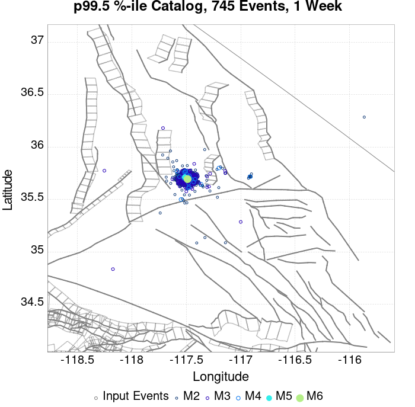 |  |  |
| 1 Month |  |  |  |  |  |  |  |  |  |  |  |  |
| 1 Year | 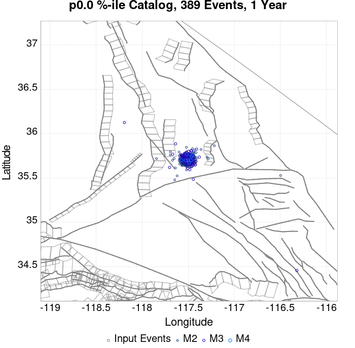 | 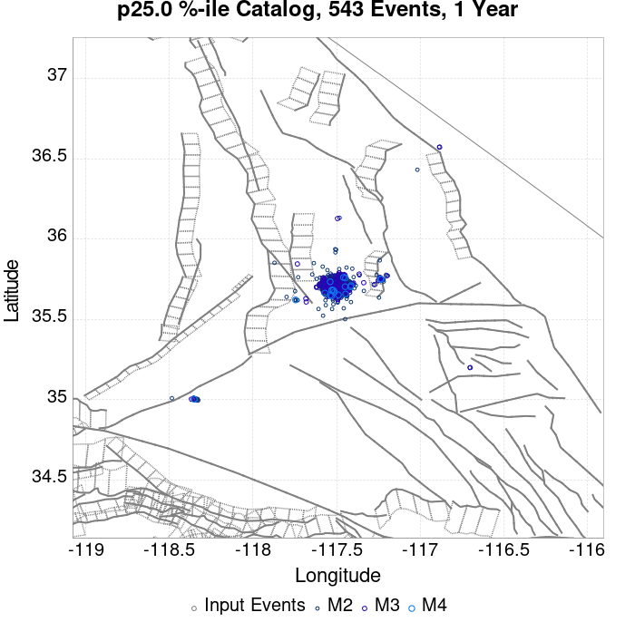 |  |  | 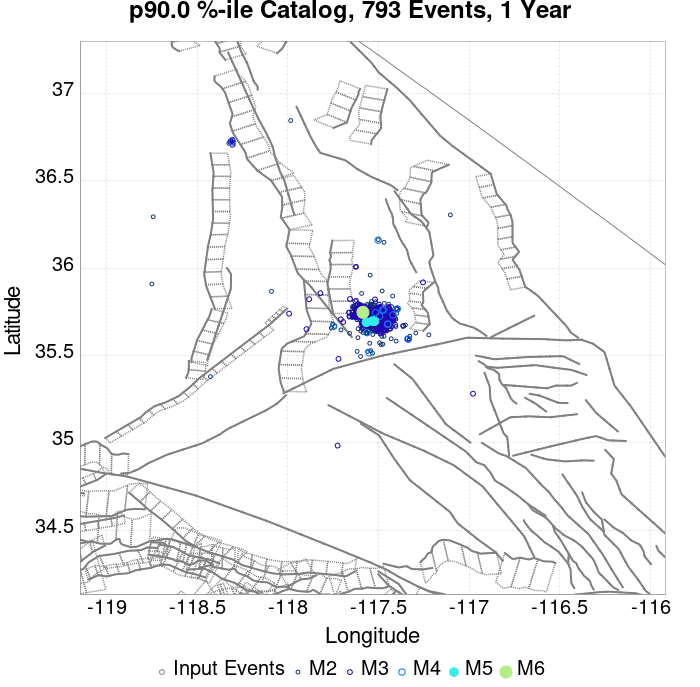 |  |  |  |  |  |  |  |
| 10 Year |  |  |  |  |  |  |  |  |  |  |  |  |
These plots compare simulated sequences with data from ComCat. All plots only consider events with hypocenters inside the ComCat region defined in the JSON input file, and consider ruptures above Mc=3.5
Last updated at 2019/09/21 03:33:51 UTC, 78.4 d after the simulation start time
| Incremental MND | Cumulative MND |
|---|---|
 |  |
| M≥3.5 | M≥4 | M≥5 | M≥6 | M≥7 | M≥8 |
|---|---|---|---|---|---|
| 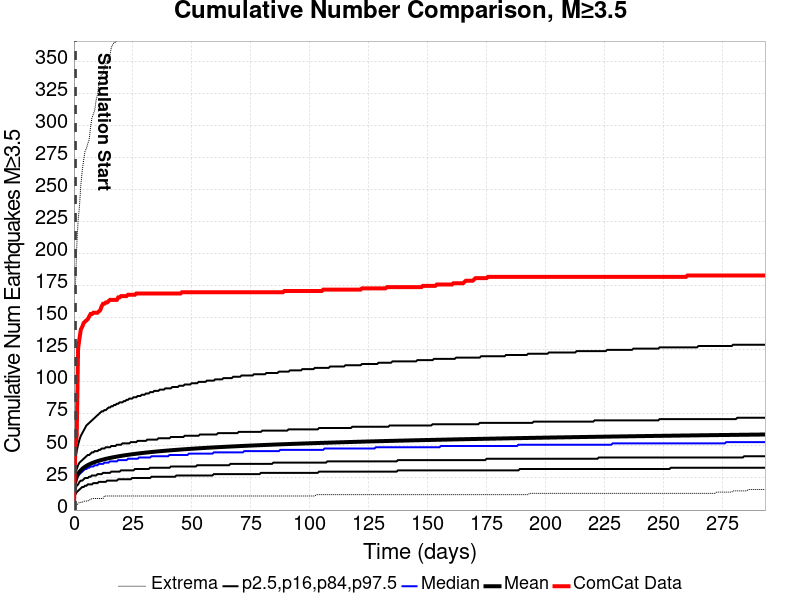 |  | 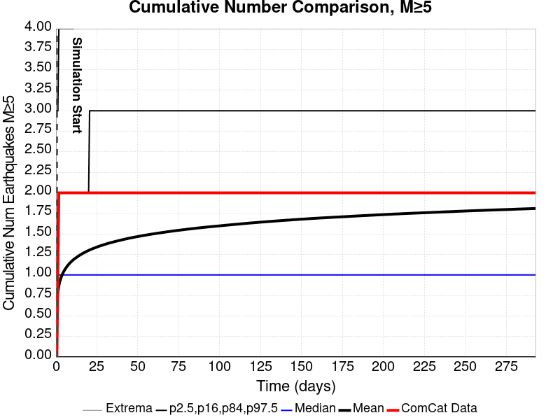 |  |  |  |

| 1 Day | 1 Week | 1 Month | Current (78.4 Day) | |
|---|---|---|---|---|
| M≥3.5 |  |  |  |  |
| M≥4 |  |  |  |  |
| M≥5 |  | 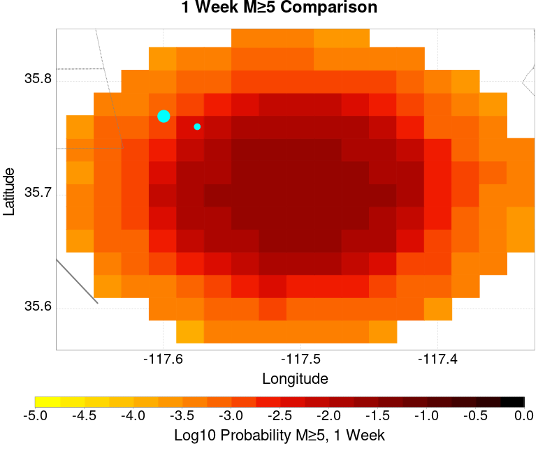 |  |  |
| M≥6 | 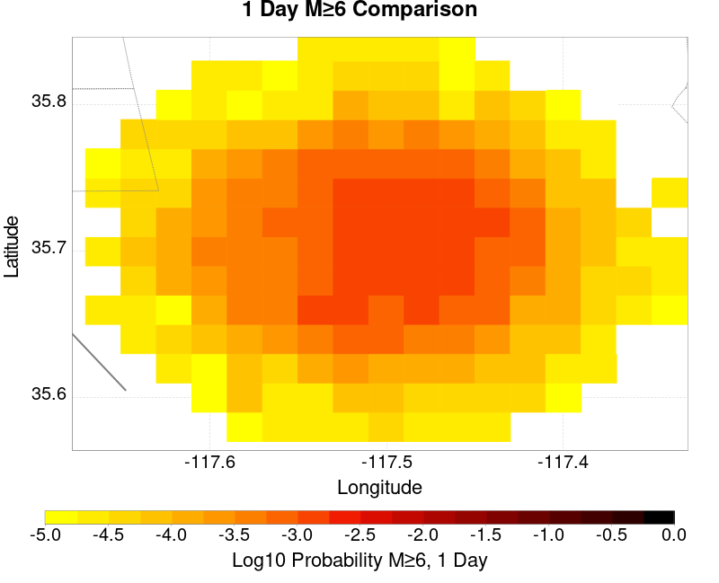 |  |  |  |
| M≥7 |  |  |  |  |
| M≥8 |  |  |  |  |
| 1 Day | 1 Week | 1 Month | Current (78.4 Day) | |
|---|---|---|---|---|
| M≥3.5 |  |  | 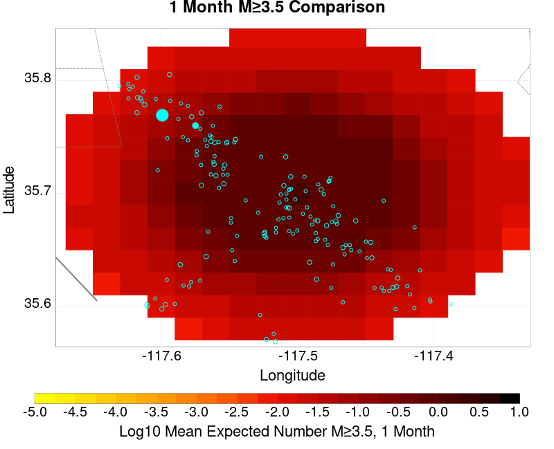 |  |
| M≥4 |  |  |  | |
| M≥5 | 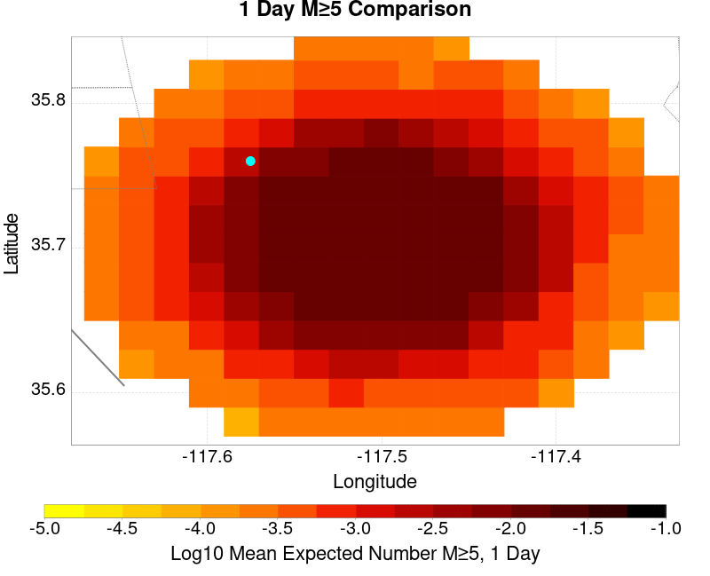 |  |  |  |
| M≥6 |  |  |  |  |
| M≥7 |  |  |  |  |
| M≥8 | 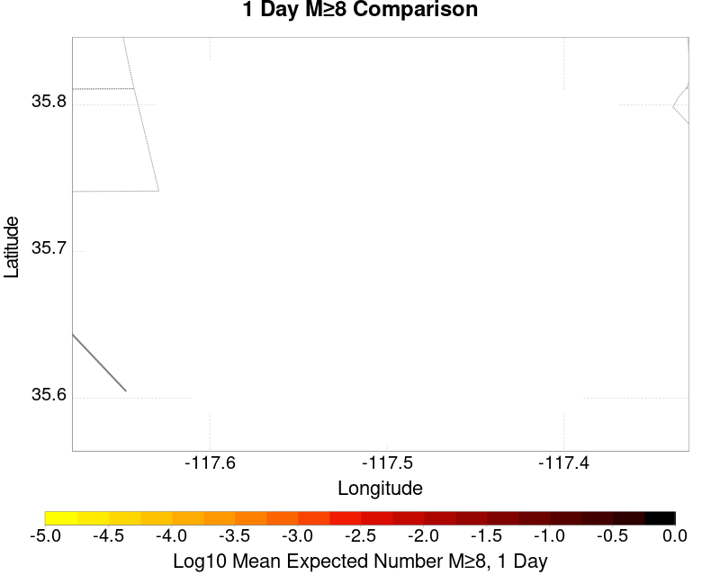 |  |  |  |
| M≥3.5 | M≥4 | M≥5 | M≥6 | M≥7 | M≥8 |
|---|---|---|---|---|---|
 | 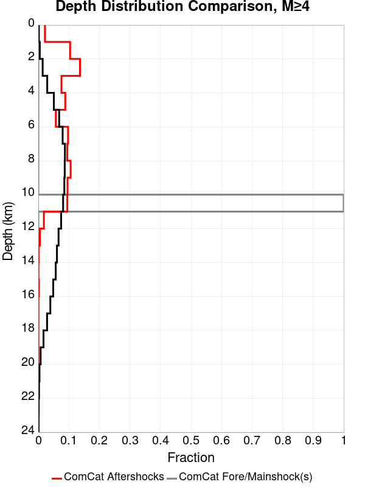 |  |  | 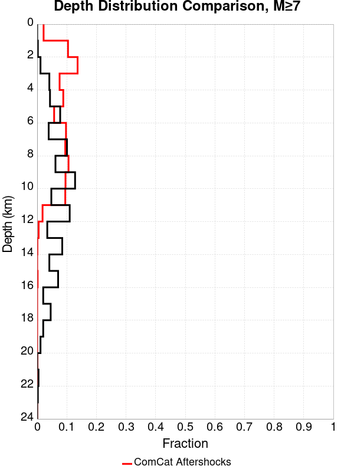 |  |
| Min Mag | 1 yr Triggered Ruptures (no spontaneous) | 10 yr Triggered Ruptures (no spontaneous) | 10 yr Triggered Ruptures (primary aftershocks only) |
|---|---|---|---|
| All Supra. Seis. |  |  |  |
| M≥6.5 |  |  |  |
| M≥7 | 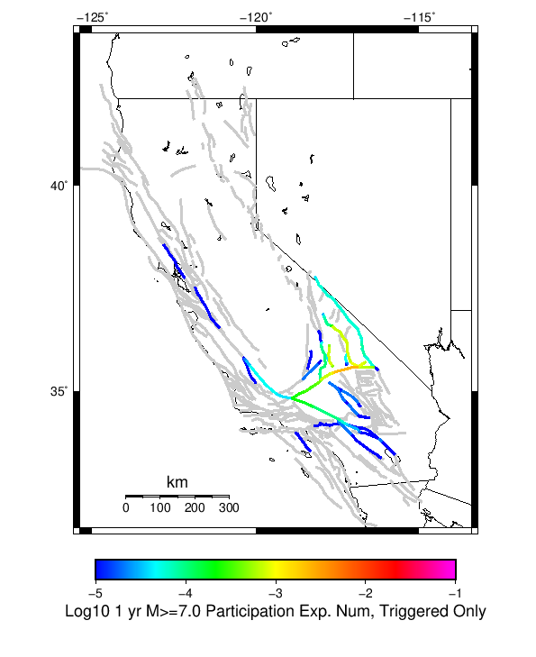 |  |  |
| M≥7.5 |  |  |  |
| M≥8 |  |  |  |
First 10 of 99 with matching ruptures shown
| Parent Name | Triggered 10 Year Mean Count | Triggered 1 Day Prob | Triggered 1 Week Prob | Triggered 1 Month Prob | Triggered 1 Year Prob | Triggered 10 Year Prob | Triggered 10 Year Primary Mean Count |
|---|---|---|---|---|---|---|---|
| Garlock (Central) | 0.007885032 | 0.0018004338 | 0.0027982646 | 0.0035900217 | 0.0054446855 | 0.0077331886 | 0.0022234274 |
| Little Lake | 0.0063449023 | 0.0019197396 | 0.0026898049 | 0.003340564 | 0.004869848 | 0.0062689804 | 0.002635575 |
| Airport Lake | 0.004739696 | 0.0014425162 | 0.0022342734 | 0.0027223427 | 0.0038611714 | 0.0047180043 | 0.0021149674 |
| Panamint Valley | 0.0020607375 | 4.5553147E-4 | 7.8091107E-4 | 9.761388E-4 | 0.0013991323 | 0.0020390456 | 5.965293E-4 |
| Tank Canyon | 0.0015075922 | 2.3861171E-4 | 4.3383948E-4 | 6.507592E-4 | 0.0011171367 | 0.0014967462 | 4.121475E-4 |
| Owl Lake | 0.0012581345 | 2.9284164E-4 | 4.229935E-4 | 6.616052E-4 | 9.4360084E-4 | 0.0012581345 | 3.362256E-4 |
| Garlock (East) | 0.0011713665 | 2.603037E-4 | 3.6876355E-4 | 4.6637745E-4 | 8.1344903E-4 | 0.0011388286 | 3.6876355E-4 |
| Hunter Mountain-Saline Valley | 0.0010629067 | 2.0607375E-4 | 4.229935E-4 | 5.4229936E-4 | 7.483731E-4 | 0.0010520607 | 3.0368764E-4 |
| Garlock (West) | 7.2668114E-4 | 1.8438177E-4 | 2.1691974E-4 | 3.0368764E-4 | 4.4468546E-4 | 7.2668114E-4 | 2.603037E-4 |
| Ash Hill | 3.7960956E-4 | 5.4229935E-5 | 1.0845987E-4 | 1.735358E-4 | 2.494577E-4 | 3.7960956E-4 | 8.67679E-5 |
First 10 of 77 with matching ruptures shown
| Parent Name | Triggered 10 Year Mean Count | Triggered 1 Day Prob | Triggered 1 Week Prob | Triggered 1 Month Prob | Triggered 1 Year Prob | Triggered 10 Year Prob | Triggered 10 Year Primary Mean Count |
|---|---|---|---|---|---|---|---|
| Garlock (Central) | 0.0038069414 | 9.6529286E-4 | 0.0014099783 | 0.0018763557 | 0.0026898049 | 0.0037635574 | 0.0012039045 |
| Airport Lake | 0.0037310196 | 0.0011713665 | 0.0017787418 | 0.0021041215 | 0.0030477224 | 0.0037310196 | 0.001670282 |
| Little Lake | 0.0035900217 | 0.0010737528 | 0.0015292842 | 0.0018546638 | 0.0027440346 | 0.0035791758 | 0.0014859003 |
| Panamint Valley | 0.0019088937 | 4.3383948E-4 | 7.592191E-4 | 9.4360084E-4 | 0.0013015184 | 0.0018872017 | 5.748373E-4 |
| Owl Lake | 0.0011279826 | 2.7114968E-4 | 3.9045553E-4 | 6.1822124E-4 | 8.6767896E-4 | 0.0011279826 | 3.1453362E-4 |
| Garlock (East) | 0.0010629067 | 2.2776573E-4 | 3.253796E-4 | 4.229935E-4 | 7.375271E-4 | 0.0010629067 | 3.6876355E-4 |
| Hunter Mountain-Saline Valley | 0.0010629067 | 2.0607375E-4 | 4.229935E-4 | 5.4229936E-4 | 7.483731E-4 | 0.0010520607 | 3.0368764E-4 |
| Garlock (West) | 6.941432E-4 | 1.8438177E-4 | 2.1691974E-4 | 2.9284164E-4 | 4.3383948E-4 | 6.941432E-4 | 2.494577E-4 |
| Tank Canyon | 3.253796E-4 | 5.4229935E-5 | 7.592191E-5 | 1.0845987E-4 | 2.1691974E-4 | 3.253796E-4 | 9.761388E-5 |
| San Andreas (Mojave N) | 3.1453362E-4 | 1.0845987E-4 | 1.19305856E-4 | 1.5184382E-4 | 2.1691974E-4 | 3.1453362E-4 | 9.761388E-5 |
First 10 of 55 with matching ruptures shown
| Parent Name | Triggered 10 Year Mean Count | Triggered 1 Day Prob | Triggered 1 Week Prob | Triggered 1 Month Prob | Triggered 1 Year Prob | Triggered 10 Year Prob | Triggered 10 Year Primary Mean Count |
|---|---|---|---|---|---|---|---|
| Garlock (Central) | 0.0034273318 | 8.35141E-4 | 0.0012581345 | 0.001691974 | 0.002440347 | 0.003383948 | 0.0011062907 |
| Panamint Valley | 0.0014316703 | 3.253796E-4 | 5.965293E-4 | 7.1583514E-4 | 9.978308E-4 | 0.0014208243 | 4.4468546E-4 |
| Owl Lake | 0.0010737528 | 2.7114968E-4 | 3.9045553E-4 | 6.1822124E-4 | 8.35141E-4 | 0.0010737528 | 3.0368764E-4 |
| Hunter Mountain-Saline Valley | 0.0010086768 | 2.0607375E-4 | 4.229935E-4 | 5.3145335E-4 | 7.1583514E-4 | 0.0010086768 | 3.0368764E-4 |
| Garlock (East) | 9.6529286E-4 | 2.2776573E-4 | 3.1453362E-4 | 4.013015E-4 | 6.941432E-4 | 9.6529286E-4 | 3.6876355E-4 |
| Little Lake | 9.219089E-4 | 3.1453362E-4 | 4.5553147E-4 | 4.989154E-4 | 7.917571E-4 | 9.219089E-4 | 4.229935E-4 |
| Airport Lake | 8.6767896E-4 | 3.0368764E-4 | 4.229935E-4 | 4.6637745E-4 | 7.483731E-4 | 8.6767896E-4 | 4.229935E-4 |
| Garlock (West) | 6.941432E-4 | 1.8438177E-4 | 2.1691974E-4 | 2.9284164E-4 | 4.3383948E-4 | 6.941432E-4 | 2.494577E-4 |
| San Andreas (Mojave N) | 3.1453362E-4 | 1.0845987E-4 | 1.19305856E-4 | 1.5184382E-4 | 2.1691974E-4 | 3.1453362E-4 | 9.761388E-5 |
| San Andreas (Mojave S) | 2.494577E-4 | 7.592191E-5 | 8.67679E-5 | 1.19305856E-4 | 1.735358E-4 | 2.494577E-4 | 9.761388E-5 |
First 10 of 34 with matching ruptures shown
| Parent Name | Triggered 10 Year Mean Count | Triggered 1 Day Prob | Triggered 1 Week Prob | Triggered 1 Month Prob | Triggered 1 Year Prob | Triggered 10 Year Prob | Triggered 10 Year Primary Mean Count |
|---|---|---|---|---|---|---|---|
| Garlock (Central) | 0.0015292842 | 3.470716E-4 | 5.639913E-4 | 7.1583514E-4 | 9.978308E-4 | 0.0015184382 | 4.989154E-4 |
| Hunter Mountain-Saline Valley | 9.761388E-4 | 2.0607375E-4 | 4.229935E-4 | 5.206074E-4 | 6.941432E-4 | 9.761388E-4 | 3.0368764E-4 |
| Panamint Valley | 9.761388E-4 | 2.0607375E-4 | 4.229935E-4 | 5.206074E-4 | 6.941432E-4 | 9.761388E-4 | 3.0368764E-4 |
| Garlock (West) | 6.2906725E-4 | 1.626898E-4 | 1.9522777E-4 | 2.494577E-4 | 3.7960956E-4 | 6.2906725E-4 | 2.2776573E-4 |
| Garlock (East) | 3.9045553E-4 | 9.761388E-5 | 1.3015185E-4 | 1.626898E-4 | 2.603037E-4 | 3.9045553E-4 | 1.626898E-4 |
| San Andreas (Mojave N) | 3.1453362E-4 | 1.0845987E-4 | 1.19305856E-4 | 1.5184382E-4 | 2.1691974E-4 | 3.1453362E-4 | 9.761388E-5 |
| San Andreas (Mojave S) | 2.494577E-4 | 7.592191E-5 | 8.67679E-5 | 1.19305856E-4 | 1.735358E-4 | 2.494577E-4 | 9.761388E-5 |
| San Andreas (San Bernardino N) | 1.4099783E-4 | 3.2537962E-5 | 3.2537962E-5 | 4.338395E-5 | 8.67679E-5 | 1.4099783E-4 | 5.4229935E-5 |
| Owl Lake | 1.3015185E-4 | 4.338395E-5 | 4.338395E-5 | 5.4229935E-5 | 7.592191E-5 | 1.3015185E-4 | 3.2537962E-5 |
| Death Valley (Black Mtns Frontal) | 7.592191E-5 | 4.338395E-5 | 5.4229935E-5 | 6.5075925E-5 | 6.5075925E-5 | 7.592191E-5 | 4.338395E-5 |
First 10 of 15 with matching ruptures shown
| Parent Name | Triggered 10 Year Mean Count | Triggered 1 Day Prob | Triggered 1 Week Prob | Triggered 1 Month Prob | Triggered 1 Year Prob | Triggered 10 Year Prob | Triggered 10 Year Primary Mean Count |
|---|---|---|---|---|---|---|---|
| Garlock (Central) | 2.1691974E-5 | 1.0845987E-5 | 1.0845987E-5 | 1.0845987E-5 | 1.0845987E-5 | 2.1691974E-5 | 2.1691974E-5 |
| Garlock (East) | 2.1691974E-5 | 1.0845987E-5 | 1.0845987E-5 | 1.0845987E-5 | 1.0845987E-5 | 2.1691974E-5 | 2.1691974E-5 |
| Garlock (West) | 2.1691974E-5 | 1.0845987E-5 | 1.0845987E-5 | 1.0845987E-5 | 1.0845987E-5 | 2.1691974E-5 | 2.1691974E-5 |
| San Andreas (Mojave N) | 2.1691974E-5 | 1.0845987E-5 | 1.0845987E-5 | 1.0845987E-5 | 1.0845987E-5 | 2.1691974E-5 | 2.1691974E-5 |
| San Andreas (Mojave S) | 2.1691974E-5 | 1.0845987E-5 | 1.0845987E-5 | 1.0845987E-5 | 1.0845987E-5 | 2.1691974E-5 | 2.1691974E-5 |
| San Andreas (San Bernardino N) | 2.1691974E-5 | 1.0845987E-5 | 1.0845987E-5 | 1.0845987E-5 | 1.0845987E-5 | 2.1691974E-5 | 2.1691974E-5 |
| San Andreas (Coachella) rev | 1.0845987E-5 | 1.0845987E-5 | 1.0845987E-5 | 1.0845987E-5 | 1.0845987E-5 | 1.0845987E-5 | 1.0845987E-5 |
| San Andreas (North Branch Mill Creek) | 1.0845987E-5 | 1.0845987E-5 | 1.0845987E-5 | 1.0845987E-5 | 1.0845987E-5 | 1.0845987E-5 | 1.0845987E-5 |
| San Jacinto (Anza) rev | 1.0845987E-5 | 0.0 | 0.0 | 0.0 | 0.0 | 1.0845987E-5 | 1.0845987E-5 |
| San Jacinto (Borrego) | 1.0845987E-5 | 0.0 | 0.0 | 0.0 | 0.0 | 1.0845987E-5 | 1.0845987E-5 |
The first 5 sections (sorted by trigger rate) are plotted below. All fault MPDs are available here
| 1 Week | 1 Month | 1 Year | 10 Year |
|---|---|---|---|
 |  |  |  |
 |  |  |  |
 |  |  |  |
 |  | 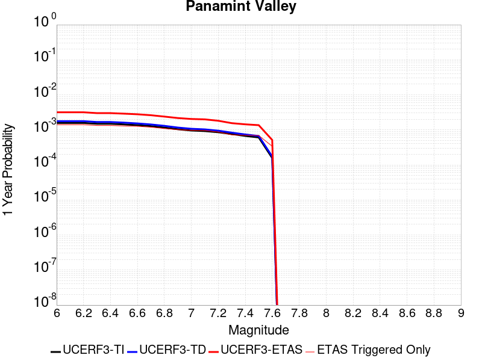 |  |
 |  |  |  |
| Min Mag | Triggered Ruptures (no spontaneous) | Triggered Ruptures (primary aftershocks only) |
|---|---|---|
| M≥2.5 |  |  |
| M≥5 |  |  |
| M≥6 |  |  |
| M≥7 |  |  |
{
"numSimulations": 100000,
"duration": 10.0,
"startTimeMillis": 1562261630000,
"includeSpontaneous": false,
"randomSeed": 1568924297288,
"binaryOutput": true,
"binaryOutputFilters": [
{
"prefix": "results_complete",
"descendantsOnly": false
},
{
"prefix": "results_m5_preserve_chain",
"minMag": 5.0,
"preserveChainBelowMag": true,
"descendantsOnly": false
}
],
"forceRecalc": false,
"simulationName": "ComCat M6.4 (ci38443183), Point Sources, Impose G-R",
"numRetries": 3,
"outputDir": "${ETAS_SIM_DIR}/2019_09_19-ComCatM6p4_ci38443183_PointSources_ImposeGR",
"triggerRuptures": [
{
"occurrenceTimeMillis": 1562259775340,
"comcatEventID": "ci38443095",
"mag": 3.98,
"latitude": 35.708,
"longitude": -117.5036667,
"depth": 10.58
},
{
"occurrenceTimeMillis": 1562261629000,
"comcatEventID": "ci38443183",
"mag": 6.4,
"latitude": 35.7053333,
"longitude": -117.5038333,
"depth": 10.5
}
],
"cacheDir": "${ETAS_LAUNCHER}/inputs/cache_fm3p1_ba",
"fssFile": "${ETAS_LAUNCHER}/inputs/2013_05_10-ucerf3p3-production-10runs_COMPOUND_SOL_FM3_1_SpatSeisU3_MEAN_BRANCH_AVG_SOL.zip",
"probModel": "FULL_TD",
"applySubSeisForSupraNucl": true,
"totRateScaleFactor": 1.14,
"gridSeisCorr": true,
"timeIndependentERF": false,
"griddedOnly": false,
"imposeGR": true,
"includeIndirectTriggering": true,
"gridSeisDiscr": 0.1,
"catalogCompletenessModel": "RELAXED",
"configCommand": "u3etas_comcat_event_config_builder.sh --event-id ci38443183 --num-simulations 100000 --days-before 7 --impose-gr --mag-complete 3.5 --hpc-site USC_HPC --nodes 36 --hours 24 --queue scec",
"configTime": 1568924297288,
"comcatMetadata": {
"region": {
"centerLatitude": 35.7053333,
"centerLongitude": -117.5038333,
"radius": 15.703628043335499
},
"eventID": "ci38443183",
"minDepth": -10.0,
"maxDepth": 24.0,
"minMag": 2.5,
"startTime": 1561656829000,
"endTime": 1562261629001,
"magComplete": 3.5
}
}